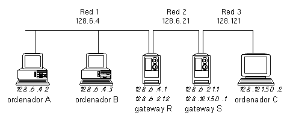
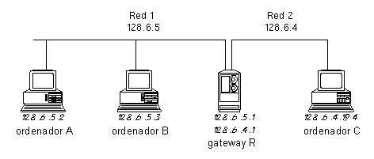
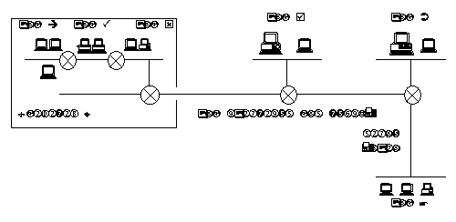
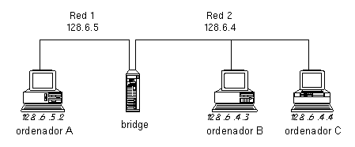
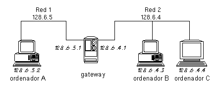

Introducción
a la
Administración
de una
Red Local
basada en Internet
C R
C S
Computer Science Facilities Group
C I
L S
RUTGERS
The State University of New Jersey
Center for Computers and Information Services
Laboratory for Computer Science Research
23 de Septiembre de 1988
Introducción para aquellos que pretenden administrar una red basada en los protocolos de red de Internet (TCP/IP)
Copyright © 1988 Charles L. Hedrick. Cualquiera puede reproducir este documento en su totalidad o en parte, comprometiéndose a: (1) que en cualquier copia o publicación debe aparecer Rutgers University como fuente, y debe incluir este mensaje; y (2) cualquier otro uso de este material debe hace referncia a este manual y a Rutgers University, y al hecho de que este material es copyright de Charles Hedrick y es usado bajo su permiso.
Unix es una marca registrada de AT&T Technologies
Traducción al castellano por
Juanjo Marín <juanjo96@arrakis.es>
1. El problema...............................................................3
1.1. Terminología......................................................3
2. Asignación de direcciones y enrutamiento..................................3
3. Eligiendo una estructura de direcciones...................................5
3.1. ¿Debemos subdividir nuestro espacio de direcciones?...............6
3.2. Subredes y múltiples números de red...............................7
3.3. Cómo asignar las subredes o los números de red....................8
3.4. Trabajar con múltiples subredes "virtuales" en una red............9
3.4.1. Otra forma de trabajar con múltiples subredes...........10
3.4.2. Múltiples subredes: Consecuencias en el broadcasting....10
3.5. Eligiendo una clase de dirección.................................11
3.6. Líneas IP y micro gateways: direcciones asignadas dinámicamente..12
3.6.1. Líneas IP...............................................12
3.6.2. Micro gateways..........................................14
4. Servicios a nivel de red, nombres........................................15
5. Configurando el enrutamiento de cada ordenador...........................19
5.1. Cómo enrutar los datagramas......................................20
5.2. Rutas fijas......................................................23
5.3. Reconducir el enrutamiento.......................................24
5.4. Otros métodos para que los hosts encuentren rutas................25
5.4.1. Espiar el enrutamiento..................................26
5.4.2. Proxy ARP...............................................26
5.4.3. Establecer nuevas rutas tras fallos.....................29
6. Puentes y gateways.......................................................31
6.1. Diseños alternativos.............................................32
6.1.1. Una red de líneas punto a punto.........................32
6.1.2. Tecnología de los circuitos de conmutación..............33
6.1.3. Redes de un solo nivel..................................33
6.1.4. Diseños mixtos..........................................34
6.2. Introducción a las distintas tecnologias de conmutación..........36
6.2.1. Repetidores.............................................37
6.2.2. Bridges y gateways......................................38
6.2.3. Más sobre bridges.......................................40
6.2.4. Más sobre gateways......................................41
6.3. Comparando las tecnologias de conmutación........................41
6.3.1. Aislamiento.............................................42
6.3.2. Prestaciones............................................43
6.3.3. Enrutamiento............................................44
6.3.4. Administración de redes.................................45
6.3.5. Una evaluación final....................................47
7. Configurando gateways....................................................48
7.1. Configurando el enrutamiento de los gateways.....................50
Este trabajo trata fundamentalmente sobre los aspectos "lógicos" de la arquitectura de red. Lo que puede o no puede hacer una red está generalmente determinado por los protocolos que dicha red soporta y la calidad de sus implementaciones, más que por la tecnología concreta de red usada, como Ethernet, Token Ring, etc. Además, en la práctica, la elección de la tecnología de red está basada en decisiones puramente pragmáticas: qué tipo de red soporta el tipo de ordenadores que queremos conectar, las distancias entre los equipos, las características del cableado, etc. Por regla general, se suele usar Ethernet para sistemas de media escala, Ethernet o una red basada en el cableado de par trenzado para pequeñas redes, o redes de alta velocidad (típicamente Token Ring) para la red principal de un campus y para redes de super ordenadores, que ejecutan aplicaciones de altas prestaciones.
Por tanto, vamos a asumir que hemos llegado a conectar "físicamente" unas redes individuales, del tipo Ethernet o Token Ring. Ahora nos enfrentamos a los siguientes problemas interrelacionados:
* configurar el software necesario;
* conectar las distintas Redes Ethernet, Token Ring, etc, para formar una única red de forma coherente;
* conectar las redes al mundo exterior, o sea, Internet.
Las anteriores decisiones requieren un pequeño análisis. De hecho, la mayoría de las redes necesitan una "arquitectura", que determina la manera en que se asignan las direcciones, cómo se hace el enrutado y otras elecciones, sobre cómo los ordenadores interaccionan con la red. Estas decisiones deben hacerse para la red en su conjunto, preferiblemente cuando se esta procediendo a su instalación inicial.
1.1. TERMINOLOGIA.
Vamos a usar el término "IP" para referirnos a las redes diseñadas para trabajar con TCP/IP. IP es el protocolo a nivel de red de la familia de protocolos TCP/IP, usados en Internet. Es una práctica común usar el término "IP" cuando nos referimos a direcciones, enrutamiento y otros elementos a nivel de red. La distinción muchas veces no es lo suficientemente clara. Así que, en la práctica, los términos Internet TCP/IP e IP pueden parecer incluso intercambiables.
Los términos "paquete" y "datagrama" también suelen parecer intercambiables. Conceptualmente, un "paquete" es la unidad física de más bajo nivel, mientras que "datagrama" se refiere a la unidad de datos a nivel IP. Sin embargo, en la mayoría de las redes no se pueden distinguir porque coinciden, así que la gente suele usar los dos términos indistintamente.
Otro término "conflictivo" es el de pasarela ("gateway") y enrutador ("router"). Pasarela es el término original usado en Internet. Sin embargo, la comunidad OSI empezó a usar esta palabra con un significado distinto, así que la gente empezó a usar enrutador para evitar dicha ambigüedad. Nosotros, no obstante, seguiremos usando el término gateway.
Muchas de las decisiones que se necesitan para la configuración de una red IP depende del enrutamiento. En general, un datagrama IP pasa a través de numerosas redes mientras se desplaza entre el origen y el destino. Veamos un ejemplo típico:

Este gráfico muestra tres ordenadores, 2 gateways y tres redes. Las redes pueden ser Ethernet, Token Ring o de cualquier otro tipo. La red 2 podría ser una línea punto a punto que conecta los gateways R y S.
El ordenador A puede enviar datagramas al B directamente, usando la red 1. Sin embargo, no puede llegar al ordenador C directamente, puesto que no están en la misma red. Hay varias maneras de conectar redes. En el gráfico asumimos el uso de gateways (más adelante veremos otras alternativas). En este caso, los datagramas que van desde A a C deben ser enviados a través del gateway R, red 2 y gateway S. Todos los ordenadores que usan TCP/IP necesitan que se les suministre la información y algoritmos apropiados para que puedan saber cuándo un datagrama debe ser enviado a través de un gateway, y elegir el gateway apropiado.
El enrutado está íntimamente relacionado con la asignación de direcciones. Podemos apreciar que la dirección de cada ordenador comienza con el número de la red a la que pertenece. Por tanto, 128.6.4.2 y 128.6.4.3 se encuentran en la red 128.6.4. Luego los gateways, cuyo trabajo es conectar dos redes, tienen una dirección de ambas redes. Por ejemplo, el gateway R conecta la red 128.6.4 y 128.6.21. Su conexión a la red 128.6.4 tiene la dirección 128.6.4.1. Su conexión a la red 128.6.21 tiene la dirección 128.6.21.2.
Debido a esta relación entre direcciones y redes, las decisiones de enrutado deben basarse estrictamente en el número de red de destino. La información de enrutamiento del ordenador A tendrá el siguiente aspecto:
red gateway métrica
128.6.4 - 0
128.6.21 128.6.4.1 1
128.121 128.6.4.1 2
En esta tabla, el ordenador A puede enviar datagramas a los ordenadores de la red 128.6.4 directamente, y para los datagramas a los ordenadores de las redes 128.6.21 y 128.121 es necesario usar el gateway R. La "métrica" será usada por algún tipo de algoritmo de enrutamiento, como medida de la lejanía del destinatario. En nuestro caso, la métrica simplemente indica cuantos diagramas tiene que atravesar para llegar a su destino (conocida como "cuenta de saltos").
Cuando el ordenador A está listo para enviar un datagrama se examina la dirección del destinatario. Comparamos el inicio de dicha dirección de red con las direcciones de la tabla de enrutamiento. Las distintas entradas de la tabla indican si el datagrama debe ser enviado directamente, o a un gateway.
Un gateway consiste simplemente en un ordenador conectado a dos redes diferentes, y está habilitado para enviar datagramas entre ellos. En muchos casos es más eficiente usar un equipo especialmente diseñado para desempeñar el papel de gateway. Sin embargo, es perfectamente posible usar un ordenador, siempre y cuando tenga más de un interfaz de red y un software capaz de enviar datagramas.
Un gateway tiene varias direcciones, una para cada red a la que esté conectado. Aquí encontramos una diferencia entre IP y otros protocolos de red: cada interface de un ordenador tiene una dirección. Con otros protocolos, cada ordenador tiene una única dirección, aplicable a todos sus interfaces. Un gateway entre las redes 128.6.4 y 128.6.21 tendrá una dirección que comience por 128.6.4 (por ejemplo, 128.6.4.1). Esta dirección se refiere a su conexión a la red 128.6.4. También tendrá una dirección que comience con 128.6.21 (por ejemplo, 128.6.21.2). Esta se refiere a su conexión a la red 128.6.21.
El término "red" generalmente se suele identificar a dispositivos del tipo Ethernet, en la cual varias máquinas están conectadas. Sin embargo, también se aplica a líneas punto a punto. En el gráfico anterior, las redes 1 y 3 podrían estar en ciudades distintas; la red 2 podría ser una línea serie, un enlace satélite, u otro tipo de conexión punto a punto. Una línea punto a punto es tratada como una red que consta sólo de dos ordenadores. Como cualquier otra red, una línea punto a punto tiene una dirección de red (en este caso, 128.6.21). Los sistemas conectados por la línea (gateways R and S) tienen direcciones en dicha red (en este caso, 128.6.21.1 y 128.6.21.2).
Es posible diseñar software que no necesite distintos números de red para cada línea punto a punto. En este caso, el interface entre el gateway y la línea punto a punto no tiene una dirección. Esta solución es apropiada cuando la red es tan grande que peligra el hecho de que nos quedemos sin direcciones. Sin embargo, tales "interfaces anónimas" pueden dificultar bastante el manejo de la red. Puesto que no tienen dirección, el software de red no tiene manera de referirse a dicho interface, y, por tanto, no es posible obtener información sobre el flujo y los errores de la interface.
Antes de comenzar a montar una estructura de IP, necesitamos uno o más números de red oficiales. Una dirección IP tiene un aspecto como el siguiente: 128.6.4.3. Esta dirección sólo podrá ser usada por un ordenador de la Universidad de Marx. La primera parte de dicha dirección, 128.6, es un número de red asignado a dicha Universidad por una autoridad central. Por tanto, antes de asignarse direcciones a nuestros ordenadores, deberemos obtener una dirección oficial de red. Sin embargo, alguna gente configura sus redes usando, o bien una dirección aleatoria o usando una dirección genérica suministrada por defecto en el equipo. Esta forma de trabajar podría funcionar en pequeñas redes, pero seguramente no lo hará en una mayor. Además, es posible que quisiéramos conectar nuestra red con la red de otra organización. Incluso si nuestra organización tuviese un gran control de seguridad, es posible que tuviéramos un ordenador dedicado a la investigación que estuviese conectado a una universidad u otra organización investigadora. Esta universidad o entidad estaría seguramente conectada a una red de nivel nacional. Tan pronto como uno de nuestros datagramas salga de nuestra red local va a provocar un estado de confusión en la organización con la que nos comuniquemos, porque la dirección que aparece en nuestros datagramas está probablemente asignada oficialmente a alguien distinto.
La solución es simple: obtener una dirección propia desde el principio. Además, no cuesta nada.
La decisión más importante que tenemos que hacer para configurar una red es, sin lugar a dudas, cómo asignar las direcciones IP a los ordenadores. Esta elección debe de hacerse desde el punto de vista de cómo nuestra red puede crecer. Si no se hiciese así, es casi seguro que tendremos que cambiar las direcciones en un futuro. Y cuando tengamos varios cientos de ordenadores, cambiar tantas direcciones es casi imposible.
Las direcciones son muy importantes porque los datagramas IP son enrutados en base a dicha dirección. Por ejemplo, las direcciones de la Universidad Groucho Marx tienen una estructura de dos niveles. Una dirección típica puede ser 128.6.4.3. La dirección 128.6 es la asignada a dicha Universidad. Visto desde el exterior, 128.6 es una simple red. Cualquier datagrama enviado desde el exterior, que comience por 128.6, se dirigirá al gateway más cercano de la Universidad Groucho Marx. Sin embargo, dentro de Groucho Marx dividimos el espacio de direcciones en "subredes". Usamos los siguientes 8 bits de dirección para indicar a qué subred pertenece el ordenador. Así, 128.6.4.3 pertenece a la subred 128.6.4. Generalmente, las subredes se corresponden con redes "físicas" o reales, por ejemplo una red Ethernet; sin embargo, veremos algunas excepciones más adelante. Los sistemas dentro de Groucho Marx, a diferencia de los de fuera, contienen información sobre la estructura de subredes de Groucho Marx. Así, una vez que un datagrama para 128.6.4.3 llega a Groucho Marx, la red de Groucho Marx lo enrutará hacia la Ethernet, Token Ring o cualquier otro tipo de red del departamento que tiene asignado la subred 128.6.4.
Cuando queremos configurar una red, hay varias decisiones de direccionamiento que debemos afrontar:
* ¿Dividimos nuestro espacio de direcciones?
* Si lo hacemos, ¿usamos subredes o direcciones de clase C?
* ¿Cómo debe ser de grande el espacio de direcciones que necesitamos?
3.1. ¿DEBEMOS SUBDIVIDIR NUESTRO ESPACIO DE DIRECCIONES?
No es absolutamente necesario usar subredes. Hay mecanismos que permiten actuar a un campus o compañía completa como una simple y gran Ethernet, así que no es necesario un enrutamiento interno. Si usamos estas tecnologías, entonces no necesitaremos dividir nuestro espacio de direcciones. En este caso, la única decisión que tenemos que tomar es la de qué clase de dirección debemos de usar. Sin embargo, recomendamos usar un enfoque de subredes o cualquier otro método de subdividir nuestro espacio de dirección en varias redes:
* En la sección 6.2. discutiremos que los gateways internos son recomendables para todas las redes, más allá de su simplicidad.
* Incluso si no necesitamos gateways en estos momentos, podemos descubrir que tarde o temprano necesitaremos usarlos. De esta manera, probablemente tiene sentido asignar direcciones como si cada Ethernet o Token Ring fuera una subred separada. Esto permitirá hacer conversiones a subredes reales, si esto es necesario.
* Por razones de mantenimiento, es conveniente tener direcciones cuya estructura corresponda con la estructura de la red. Por ejemplo, si vemos un datagrama extraviado procedente del sistema 128.6.4.3, es de bastante ayuda saber que todas las direcciones que comienzan por 128.6.4 se encuentran en un determinado edificio.
3.2. SUBREDES Y MULTIPLES NUMEROS DE RED.
Supongamos que estamos convencidos de que es una buena idea imponer alguna estructura en nuestras direcciones. La siguiente cuestión es cuál es la más adecuada. Hay dos enfoques básicos: subredes y múltiples números de red.
Los estándares de Internet especifican el formato de las direcciones. Para las direcciones que comienzan entre 128 y 191 (las más usadas actualmente), los dos primeros octetos forman el número de red; por ejemplo, en 140.3.50.1, 140.3 es el número de red. Los números de red están asignados a una organización particular. ¿Qué hacemos con los dos siguientes octetos que le siguen?. Podríamos optar por hacer al siguiente octeto un número de subred, u otro esquema completamente distinto. Los gateways dentro de nuestra organización deben configurarse para conocer qué esquema de división de redes estamos usando. Sin embargo, fuera de la organización nadie sabrá si 140.3.50 es una subred y 140.3.51 es otra; simplemente, fuera se sabe que 140.3 es una organización. Desafortunadamente, esta habilidad de añadir una estructura adicional a las direcciones, mediante el uso de subredes, no estaba presente en las especificaciones originales y, por tanto, un software antiguo sería incapaz de trabajar con subredes. Si una parte importante del software que hemos de usar tiene este problema, entonces no podremos dividir nuestra red en subredes.
Algunas organizaciones usan un enfoque distinto. Es posible que una organización use varios números de red. En lugar de dividir un simple número de red, por ejemplo 140.3, en varias subredes, como de 140.3.1 a 140.3.10, podríamos usar 10 números distintos de red. De esta manera haríamos una asignación desde 140.3 hasta 140.12. Todo el software IP sabrá que estas direcciones se corresponden con redes distintas.
A pesar de que usando números de red distintos todo funciona correctamente dentro de la organización, hay dos serias deventajas. La primera, y menos importante, es que se malgasta un gran espacio de direcciones. Hay solamente sobre unas 16.000 posibles direcciones de clase B. No queremos malgastar diez de ellas en nuestra organización, a no ser que sea bastante grande. Esta objección es 'menos seria', porque podríamos pedir una dirección C para este propósito y hay sobre 2 millones de direcciones C.
El problema más serio para usar varias direcciones de red, en lugar de subredes, es que sobrecarga las tablas de enrutamiento en el resto de Internet. Como comentamos anteriormente, cuando dividimos nuestro número de red en subredes, esta división sólo es conocida dentro de la organización, pero no fuera. Los sistemas externos a la organización sólo necesitan una entrada en sus tablas para ser capaces de llegar. Por tanto, otras Universidades tienen entradas en sus tablas de enrutamiento para 128.6, similar al número de la red de Groucho Marx. Si usa un rango de redes en lugar de subredes, dicha división será visible en todo Internet. Si usamos los números 128.6 a 128.16, en lugar de 128.6, las otras universidades necesitarían tener una entrada para cada uno de estos números de red en sus tablas de enrutamiento. La mayoría de los expertos de TCP/IP recomiendan el uso de subredes, en lugar de múltiples redes. La única razón para considerar múltiples redes es el uso de un software que no puede manejar subredes. Esto era un problema hace algunos años, pero actualmente es poco frecuente.
Una última indicación sobre subredes: Las subredes deben ser "adyacentes". Esto significa que no podemos conectar la subred 128.6.4 con la subred 128.6.5 mediante otra red, como la 128.121. Por ejemplo, Groucho Marx tiene campus en Simon City y Garfunken City. Es perfectamente posible conectar redes en ciudades distintas que sean subred de 128.6. Sin embargo, en este caso, las líneas entre Simon City y Garfunken City deben ser parte de 128.6. Supongamos que decidimos usar una red regional como la RegionaLnet para comunicarnos entre dos campus, en lugar de usar su propia línea. Puesto que RegionaLnet tiene de número de red 128.121, los gateways y líneas de serie que usarían empezarían por 128.121. Esto viola las reglas. No está permitido tener gateways o líneas que son parte de 128.121 conectando dos partes de 128.6. Así, si queremos usar RegionaLnet entre nuestros dos campus, tendríamos que obtener diferentes números de red para los dos campus. (Esta regla es un resultado de las limitaciones de la tecnología de enrutamiento. Eventualmente podría desarrollarse un software para un gateway para manejar configuraciones cuyas redes no son contiguas).
3.3. COMO ASIGNAR LAS SUBREDES O LOS NUMEROS DE RED.
Ahora, una vez decidido si vamos a usar subredes o múltiples números de red, tenemos que asignarlos. Normalmente es bastante fácil. Cada red física, ya sea Ethernet o Token Ring, ..., se le asigna un número distinto de subred. Sin embargo, existen otras opciones.
En algunos casos, puede que tenga sentido asignar varios números de subred a una única red física. En Groucho Marx hay una única Ethernet que ocupa tres edificios, usando repetidores. Está claro que a medida que vayamos añadiendo ordenadores a esta Ethernet se irá dividiendo en varias Ethernets separadas. Para evitar tener que cambiar de direcciones cuando esto suceda, hemos asignado tres números de red distintas a esta Ethernet, una por edificio. (Esto podría ser útil, incluso, si no hubiésemos dividido la Ethernet con el fin de ayudar a localizarlos). Pero, antes de hacer esto, debemos estar muy seguros de que el software de todos los ordenadores puede manejar una red que tiene tres números de red. Esta práctica se verá más detalladamente en la sección 3.4.
También hemos de elegir una "máscara de subred", que será usada por el software del sistema para separar la parte de subred del resto de la dirección. Hasta ahora hemos asumido que los dos primeros octetos son el número de red y el siguiente es el número de subred. Para las direcciones de clase B, el estándar especifica que los dos primeros octetos pertenecen al número de red. Y, por otro lado, tenemos libertad para establecer el límite del número de subred y el resto de la dirección. Es bastante usual utilizar un octeto de número de subred, pero no es la única posibilidad. Veamos de nuevo esta dirección de clase B, 128.6.4.3. Es fácil deducir que, si el tercer octeto es usado como número de subred, entonces habrá 256 posibles subredes y, en cada subred, habrá 256 posibles direcciones. (En realidad es más acertado decir que disponemos de 254, ya que no es buena idea usar 0 ó 255 como números de subred o dirección). Supongamos que sabemos que nunca vamos a tener más de 128 ordenadores por subred, pero es probable que necesitemos más de 256 subredes (por ejemplo, un campus con una gran cantidad de pequeños edificios). En ese caso, podríamos establecer 9 bits como número de red, dejando 7 bits para el direccionamiento de cada subred. Esta decisión queda plasmada en una máscara de bits, usando unos para los bits usados por los números de red y de subred y ceros para los bits usados para el direccionamiento individual. La máscara de red más común es 255.255.255.0. Si elegimos 9 bits para el número de subredes y 7 para las direcciones, la máscara de subred sería 255.255.255.128.
Generalmente, es posible especificar la máscara de subred como parte de la configuración del software IP. Los protocolos IP también permiten a los ordenadores que envíen un mensaje preguntando cuál es su máscara de subred. Si nuestra red soporta el envío de estos mensajes, y hay, al menos, un ordenador o gateway de la red que conoce dicha máscara de subred, posiblemente será innecesario especificarlo en cada uno de los restantes ordenadores. Pero esta posibilidad puede traer muchos problemas. En caso de que nuestra implementación TCP/IP diera una máscara de subred errónea, se causaría una mala configuración en toda la red. Por lo tanto, es más seguro poner cada máscara de subred explícitamente en cada sistema.
3.4. TRABAJAR CON MULTIPLES SUBREDES "VIRTUALES" EN UNA RED.
La mayoría del software está desarrollado bajo el supuesto de que cada red local tiene el mismo número de subred. Cuando existe un flujo hacia una máquina con un distinto número de subred, el software espera encontrar un gateway que pueda dirigirlo hacia esa subred. Veamos detalladamente qué ocurre en este caso. Supongamos que tenemos las subredes 128.6.19 y 128.6.20 en la misma Ethernet. Consideremos las cosas que ocurren desde el punto de vista de un ordenador con direcciòn 128.6.19.3. Dicho ordenador no tendrá problemas para comunicarse con las máquinas de dirección 128.6.19.x. Estas máquinas están en la misma subred, y nuestro ordenador simplemente deberá enviar los datagramas al 128.6.20.2. Puesto que esta dirección indica que está en una subred distinta, la mayoría del software esperará encontrar un gateway que haga de puente entre ambas subredes. Por supuesto, no existe un gateway entre las "subredes" 128.6.19 y 128.6.20, puesto que están en la misma Ethernet. De aquí se deduce que tenemos que encontrar una manera de indicarle al software que el 128.6.20 se encuentra realmente en la misma Ethernet.
La mayoría de las implementaciones TCP/IP pueden manejar más de una subred en la misma red. Por ejemplo, el Berkeley Unix nos permite hacerlo usando una ligera modificación del comando usado para definir gateways. Si, por ejemplo, queremos que para pasar de la subred 128.6.19 a la subred 128.6.4 se use el gateway con dirección 128.6.19.1, podemos usar el comando
route add 128.6.4.0 128.6.19.1 1
Esto indica que para llegar a la subred 128.6.4 el flujo debe ser enviado a través del gateway 128.6.19.1. El "1" se refiere a la "métrica de enrutamiento". Si usamos la métrica "0", estamos diciendo que la subred de destino está en la misma red y, por consiguiente, no se necesita ningún gateway. En nuestro ejemplo, deberemos usar en el sistema 128.6.19.3
route add 128.6.20.0 128.6.19.1 0
La dirección usada en el lugar de 128.6.19.1 es irrelevante. La métrica "0" nos informa de que no va a usarse ningún gateway, luego no se usará dicha dirección. Sin embargo, deberá ampliarse una direción legal de la red local.
3.4.1. Otra forma de trabajar con múltiples subredes.
Hay otro modo de manejar varias subredes sobre una red física. Este método supone la desconfiguración de nuestros anfitriones o hosts y, por ello, es potencialmente peligrosa, si no sabemos exactamente lo que estamos haciendo. Sin embargo, puede resultar más cómodo cuando trabajamos con una gran cantidad de subredes en una red física. Un ejemplo de este tipo sería una instalación que use bridges, y usa subredes simplemente por facilidades de administración. El truco está en configurar el software de nuestros hosts como si no usasen subredes. Así, nuestros hosts no harán ninguna distinción entre las distintas subredes y, por tanto, no habrá problemas para trabajar con todas ellas. Ahora, el único problema es cómo comunicarnos con subredes que no estén en esta red de múltiples subredes. Pero, si nuestros gateways manejan proxy ARP, ellos resolverán este problema por nosotros. Este enfoque está especialmente indicado cuando la misma red contiene múltiples subredes y, particularmente, si se van a añadir algunas más en un futuro. Desgraciadamente, tiene dos problemas:
- Si tenemos hosts con múltiples interfaces, deberemos ser muy cuidadosos. En primer lugar, sólo debería haber máquinas con un interface en la red con múltiples subredes. Por ejemplo, supongamos que disponemos de una red que consta de varias Ethernets conectadas mediante bridges; no podemos tener una máquina con interfaces en dos de estas Ethernets, pero podemos tener un sistema con un interface en esta red de subredes múltiples y otra en otra subred apartada de ésta. En segundo lugar, cualquier máquina con múltiples interfaces deberá conocer la verdadera máscara de subred, y necesitará estar informada explícitamente de cuáles de las subredes están en la red de múltiples subredes. Estas restricciones son consecuencia de que un sistema con múltiples interfaces tiene que conocer qué interface ha de usar en cada caso.
- También deberemos prestar atención a la facilidad ICMP de la máscara de subredes. Esta facilidad permite a los sistemas emitir una consulta para conocer cuál es la máscara de subred. Si la mayoría de los hosts piensan que la red no está dispuesta en subredes, pero los gateways y los hosts con varias interfaces piensan lo contrario, tenemos aquí un foco potencial de confusión. Si un gateway o hosts con varios interfaces envía una réplica a una ICMP de máscara de red, dando la verdadera máscara de subred, alguno de los restantes hosts puede interceptarlo. La situación contraria también sería posible. Esto significa que tendremos que
* deshabilitar las réplicas a las ICMP de máscara de subred en todos aquellos sistemas que conocen la máscara real de subred (esto es especialmente fácil si solamente los gateways lo conocen);
* asegurar que nuestros hosts ignoran las réplicas ICMP.
A medida que establecemos una máscara de subred explícitamente, se supone que los hosts ignoran los ICMP de máscara de subred, así que deberemos ser capaces de establecer diferentes máscaras en diferentes hosts sin causar ningún problema, siempre y cuando podamos establecer la máscara explícitamente en todos ellos. Sin embargo, existen implementaciones IP que cambiarán su máscara de subred cuando vean una réplica de ICMP de máscara de subred.
3.4.2. Múltiples subredes: Consecuencias en el Broadcasting.
Cuando tenemos más de una subred en una misma red física, hay que tener cuidado respecto a las direcciones de broadcasting. De acuerdo con los últimos estándares, hay dos formas distintas para que un host de la subred 128.6.20 pueda enviar un broadcast en la red local. Una es usar la dirección 128.6.20.255. La otra es usar la dirección 255.255.255.255. La dirección 128.6.20.255 dice, explícitamente, "todos los hosts de la subred 128.6.20"; la 255.255.255.255 expresa "todos los hosts de mi red local". Normalmente, ambas tienen el mismo efecto. Pero no lo tienen cuando hay varias subredes en una red física. Si la red 128.6.19 está en la misma red, también recibirá el mensaje enviado a 255.255.255.255. Sin embargo, los hosts con números 128.6.19.x no escucharán los mensajes enviados a 128.6.20.255. El resultado es que ahí tenemos dos tipos distintos de direcciones de broadcast con dos significados distintos. Esto conlleva que debemos tener cuidado configurando el software de red, para asegurarnos de que nuestros broadcasting llegan a donde queremos que lo hagan.
3.5. ELIGIENDO UNA CLASE DE DIRECCION.
Cuando solicitamos un número oficial de red se nos preguntará qué clase de número de red necesitamos. Las posibles respuestas son A, B y C. La decisión elegida limitará nuestro espacio de direcciones a usar. Las direcciones de clase A ocupan un octeto; las de clase B, dos octetos, y la clase C, tres octetos. Luego, hay más direcciones de clase C que direcciones de clase A, pero las de clase C no pueden tener muchos hosts. La idea que podemos sacar de lo anterior es que debería haber pocas grandes redes, un número moderado de redes de tamaño mediano y bastantes pequeñas redes. En la siguiente tabla observamos dicha distinción:
Clase Rango 1er. octeto red resto direcciones posibles
ÄÄÄÄÄÄÄÄÄÄÄÄÄÄÄÄÄÄÄÄÄÄÄÄÄÄÄÄÄÄÄÄÄÄÄÄÄÄÄÄÄÄÄÄÄÄÄÄÄÄÄÄÄÄÄÄÄÄÄÄÄÄÄÄÄÄÄÄÄÄ
A 1 - 126 p q.r.s 16777214
B 128 - 191 p.q r.s 65534
C 192 - 223 p.q.r s 254
Por ejemplo, la red 10 es de la clase A y por tanto tiene direcciones entre 10.0.0.1 y 10.255.255.254. Esto signfica 2543, que son sobre unos 16 millones de posibles direcciones (realmente, la red 10 tiene algunas direcciones con octetos a cero, así que habrá algunas direcciones posibles más). La red 192.12.88, una dirección de clase C, tendrá sus hosts entre el 192.12.88.1 y el 192.12.88.254 y, por lo tanto, habrá 254 posibles hosts.
En general, deberemos elegir la clase menor que nos proporcione suficientes direcciones capaces de direccionar nuestra red, con sus posibles futuras ampliaciones. Aquellas organizaciones que usan ordenadores en varios edificios, probablemente necesitarán una dirección de clase B, suponiendo que vamos a usar subredes. (Y si vamos a tratar con distintos números de red, deberíamos solicitar varias direcciones de clase C). Las direcciones de clase A, normalmente, sólo se usan en grandes redes públicas y algunas pocas redes de grandes corporaciones.
En la asignación de Direcciones IP, la autoridad máxima es la IANA (Internet Assigned Number Authority). A escala continental, la IANA delega grandes bloques de direcciones IP a los denominados registros regionales, de los que, de momento, existen tres en el mundo:
* El RIPE NCC (RIPE Network Coordination Center) es el registro delegado de Internet a nivel europeo y se encarga, entre otras tareas, de la asignación de bloques de direcciones IP a los proveedores de servicios Internet en Europa y su área de influencia.
* El AP-NIC lleva a cabo la tarea de asigacion de bloques de direcciones IP a los proveedores de la región del Asia-Pacífico.
* El InterNIC se encarga de la asignación de bloques de direcciones IP a los proveedores de Internet en América del Norte y, de momento, en el resto del mundo.
Las organizaciones y usuarios finales han de obtener las direcciones IP necesarias para conectarse a Internet a través de su proveedor de acceso a Internet, quien a su vez las habrá obtenido bien de su proveedor de tránsito, bien del registro regional correspondiente.
3.6. LINEAS IP Y MICRO GATEWAYS: DIRECCIONES ASIGNADAS DINAMICAMENTE.
En la mayoría de los casos, cada uno de los ordenadores tendrá su propia dirección IP permanente. No obstante, hay algunas situaciones donde tiene más sentido asignar direcciones dinámicamente. La mayoría de los casos que manejan líneas IP constan de gateways destinados principalmente a microcomputadoras
3.6.1. Líneas IP.
Es posible usar IP sobre líneas telefónicas. Uno de los protocolos para hacer esto es el SLIP ("Serial line IP"). SLIP se usa frecuentemente en, al menos, dos circunstancias distintas:
* Como una alternativa barata a líneas punto a punto permanentes, para aquellos casos en los que no está suficientemente justificado una línea dedicada.
* Como una manera de conectar individualmente un PC a una red, cuando se encuentran localizados en edificios que no tienen Ethernets o cualquier otro tipo LAN.
Vamos a usar el término "servidor SLIP" para referirnos a un sistema de ordenador(es) que incluye una serie de modems, con los que otros sistemas pueden conectarse usando SLIP. Se trata de un sistema que proporciona un gateway de nuestra red para usuarios de PC, o para otras redes que se conectan usando SLIP.
Si tenemos varios PC's conectados mediante SLIP, muchas veces no es práctico usar una dirección IP propia para cada PC. Una de las razones puede ser que no haya suficientes direcciones. Para que el enrutamiento funcione correctamente, estos sistemas conectados deben tener sus direcciones en la misma subred que el servidor SLIP. Por lo general, hay solamente del orden de 256 direcciones disponibles en cada subred. Si el número de PC's que pueden conectarse es mayor que esa cifra, no podremos asignarles su propia dirección. Si, además, tenemos servidores SLIP en más de una subred, la asignación permanente de direcciones se hace aún más complicada. Si un usuario es capaz de llamar a dos servidores, su PC necesitaría dos direcciones, una para cada subred.
Para solucionar estos problemas, la mayoría de las implementaciones SLIP asignan las direcciones dinámicamente. Cuando un PC se conecta con el servidor SLIP, el servidor busca una dirección IP que no se esté usando y se la asigna al PC. La forma más simple de manejar esto es dando a cada servidor SLIP un rango de direcciones IP que controle y pueda asignar.
Cuando usamos este esquema, el software SLIP debe comunicar al PC, de alguna manera, qué dirección debe usar. Si cada PC tiene una dirección permanente, tendríamos el problema contrario: cuando un PC se conecta con un servidor debe de haber algún método para que el PC comunique al servidor su dirección. Este problema debe ser estudiado cuidadosamente, porque en otro caso alguien podría usar la dirección de otro y tener acceso a sus ficheros.
Desafortunadamente, no hay un estándar para manejar estos problemas de direccionamiento con SLIP. Hay varias implementaciones SLIP que lo hacen, pero todavía no hay un estándar. Hasta que no se elabore éste, deberemos tener cuidado con el software SLIP. Tenemos que asegurarnos de que dicha asignación de dirección se lleva a cabo de la manera que queremos y que nuestro servidor SLIP y los PC's tienen claro la forma en que se asignan las direcciones.
Recomendamos dar direcciones permanentes a los PC's en aquellos casos en que los demás ordenadores tienen que ser capaces de conocer con qué PC están hablando. Este podría ser el caso de un PC para recibir correo privado, o cualquier otro servicio con transacciones delicadas. Y recomienda el direccionamiento dinámico cuando tenemos un gran número de PC's y las aplicaciones que utilizan para acceder a la red tienen sus propios mecanismos de seguridad.
Cuando usemos SLIP para conectar dos redes, hay que considerar tres elecciones para el manejo de direcciones (teniendo en cuenta que no todo el software SLIP puede controlar los tres apartados):
* Tratar a las conexiones SLIP como si se tratasen de líneas punto a punto que no están disponibles permanentemente. Si podemos conectar con más de un ordenador, cada par de ordenadores que se comunican tienen un número de red distinto del que ellos usarían cuando se comunican con el otro.
* Usar un software de enrutamiento que permita interfaces anónimos. En este caso, no serían necesarias las direcciones.
* Asignar direcciones dinámicamente cuando la conexión está abierta, tan pronto como el PC haya contactado.
Si hacemos sólo una o dos conexiones a otro sistema, es bastante razonable usar un número de red para cada conexión. Este método es fácil de usar y limita los errores estadísticos.
Si tenemos muchas conexiones distintas, probablemente es mejor usar interfaces anónimos. Aunque si los sistemas de enrutamiento no lo soportan, debemos usar asignación dinámica.
Al igual que SLIP, PPP "Point to Point Protocol" es un protocolo serie distinto utilizado para enviar datagramas a través de una conexión serie, pero mejora algunas de las carencias del anterior. El PPP permite a las partes comunicantes negociar opciones como las direcciones IP y el tamaño máximo de los datagramas al comenzar la conexión, y proporciona permisos de conexión a los clientes (autorizaciones). Para cada una de estas capacidades, el PPP tiene un protocolo concreto.
A continuación, citaremos los elementos básicos que constituyen el PPP. Esta descripcion esta muy lejos de ser completa; si quiere saber mas sobre el PPP, lea sus especificaciones en el RFC 1548, asi como en la docena de RFCs que le acompañan.
En la parte más baja del PPP está el protocolo de Control de Conexión de Datos de Alto-Nivel, abreviadamente HDLC. ( En realidad, el HDLC es un protocolo mucho más general publicado por la Organización Internacional de Estándares, ISO ) que define los límites de las tramas PPP individuales, y proporciona un control de errores de 16 bit. Al contrario de lo que ocurría en las encapsulaciones SLIP más antiguas, una trama PPP es capaz de llevar paquetes de otros protocolos distintos al IP, como los IPX de Novell o Appletalk. El PPP consigue esto añadiendo a la trama básica HDLC un campo de control que identifica el tipo de paquete contenido en la trama.
El LCP, Protocolo de Control de Enlace, es utilizado en la parte más alta del HDLC para negociar las opciones concernientes a la conexión de datos, tales como la Unidad Máxima de Recepción (MRU) que establece el tamaño máximo del datagrama que una de las partes de la conexión acepta recibir.
3.6.2. Micro gateways.
Es perfectamente posible que un microcomputador forme parte de una red IP. Pero hay una tendencia de que los micros utilicen distintas tecnologías de red que la de los grandes sistemas. Esto es debido a que muchos de los usuarios de micros empiezan a demandar un software de red diseñado específicamente para las necesidades de un micro, incluso para un particular tipo de micro. Muchos usuarios están interesados en usar TCP/IP sin tener que abandonar su red especial de micro, a la que están acostumbrados. Por esta razón, hay un creciente número de productos, especialmente gateways, que dan acceso a los PC's tanto a redes orientadas a micros como a TCP/IP.
En esta sección vamos a hablar del AppleTalk, de Apple, a modo de ejemplo. No obstante, existen productos similares para otros tipos de redes de micros. Hay que aclarar que el término AppleTalk se asocia a los protocolos de red de Apple, mientras que LocalTalk se asocia a una tecnología específica de par trenzado, en la que AppleTalk fue inicialmente implementada. Por tanto, el AppleTalk es análogo a los protocolos TCP/IP, mientras que LocalTalk es análogo a medio Ethernet.
Algunas compañías ofrecen gateways para conectar una red AppleTalk corriendo sobre LocalTalk, con redes IP corriendo sobre Ethernet. A pesar de que hay varios productos de este tipo, la mayoría de ellos incluyen los siguientes servicios:
* Las aplicaciones TCP/IP de un PC pueden conectarnos a sistemas TCP/IP de la Ethernet. Se definen utilidades especiales para permitirnos llevar datagramas IP desde el PC hasta el gateway, a través del LocalTalk. Las aplicaciones TCP/IP de PC han sido escritas usando unas librerías especiales que mezclan AppleTalk y TCP/IP. Las utilidades AppleTalk se necesitan para llevar los datagramas hasta el gateway, donde se transformarán en datagramas 100% TCP/IP, antes de dejarlos en la Ethernet.
* Se pueden escribir aplicaciones AppleTalk para grandes sistemas, de tal manera que un PC podrá usarlos como servidores. Dichas aplicaciones también han sido escritas haciendo uso de una librería especial que mezcla AppleTalk y TCP/IP. Pero, en esta ocasión, son utilidades TCP/IP para dejar datagramas en el gateway, donde se transformarán totalmente en AppleTalk, antes de dejarlos en la AppleTalk y lleguen al PC.
* Una red IP de un campus o una corporación puede ser usada para conectar redes AppleTalk. Los gateways de cada Applet realizarán las conversiones necesarias antes de enviar los datagramas a la red IP.
Además, algunos gateways pueden hacer traducciones a nivel de aplicación. Por ejemplo, algunos gateways pueden hacer traducciones entre el sistema de ficheros de Apple y el sistema de fichero de red de Sun (NFS). Esto permite a un PC acceder al sistema de ficheros Unix, donde el PC usa el sistema de ficheros Apple, y el acceso al sistema Unix se hace mediante el uso del sistema NFS, o sistema de ficheros de red (Network File System ), de Sun.
Desafortunadamente, la gran flexibilidad de estos productos se traduce en una gran complejidad. El tema de direcciones es especialmente complicado. Por las mismas razones que SLIP, y PPP estos gateways usan frecuentemente asignación dinámica de direcciones IP. Para ello asignaremos un rango de direcciones IP a cada gateway. Cuando un PC intenta abrir una conexión TCP/IP, el gateway se hace con una dirección IP libre y se la asigna al PC. Al igual que SLIP, en muchos casos necesitaremos elegir si queremos que las direcciones se asignen de esta manera, o bien queremos que cada PC tenga su propia dirección. Otra vez, la elección dependerá del número de PC's que tengamos y de si tenemos aplicaciones capaces de usar la dirección IP para identificar qué PC, en particular, es el que está conectado.
El direccionamiento es mucho más complejo, debido a que AppleTalk tiene su propia estructura de direcciones. Deberemos establecer una correspondencia entre direcciones AppleTalk y números de red IP. También habrá una correspondencia entre direcciones IP y AppleTalk, que se establecerá dinámicamente en los gateways.
Si vamos a tener una red TCP/IP, hay algunas tareas importantes que realizar. Algunas de ellas son simplemente de tipo administrativo. La más importante es crear un registro central de nombres y direcciones IP. Existen organizaciones que realizan esta labor para toda la red Internet. Si estamos conectados a Internet, el administrador de nuestro sistema necesita registrarse a una de estas organizaciones, para que cualquier demanda por parte de otra institución sobre nuestros hosts sean dirigidos a nuestros servidores.
Queremos mantener una base de datos que contenga la información de cada sistema de la red. Como mínimo, necesitaremos el nombre y la dirección IP de cada sistema. Probablemente, el registro central será el encargado de asignar las direcciones IP. Si nuestra red está estructurada en subredes, o si usamos varios números de clase C, el registro posiblemente asignará los números de red a las nuevas redes o subredes. Pero, habitualmente, se permitirá que los propios administradores de los hosts elijan el nombre del host. Sin embargo, el registro debe de, al menos, verificar que no haya nombres duplicados. Si estamos trabajando con una gran red, puede que sea buena idea delegar algunas de estas tareas a subregistros, posiblemente uno para cada departamento.
Se recomienda asignar las direcciones de la forma más simple: empezando por 1. Así, si nuestra red es la 128.6, podríamos asignar como 128.6.1 a la primera subred; 128.6.2, a la segunda, etc. La asignación de direcciones IP para hosts individuales podrían empezar por 2. De esta manera reservamos la dirección 1 de cada subred para que sea usada por el gateway correspondiente. Por consiguiente, el primer host de la subred 128.6.4 sería el 128.6.4.2; el siguiente sería 128.6.4.3, y así sucesivamente. Hay una razón básica para mantener las direcciones tan cortas como sean posibles. Si tenemos una gran organización, podríamos quedarnos sin números de subred. Si esto ocurriera, y nuestros hosts tienen números de red bajos, podríamos asignar otro bit para el direccionamiento de las subredes. Si, por ejemplo, usamos el tercer octeto como número de subred, en tanto en cuanto nuestros hosts tengan unos números inferiores a 128, podremos ampliar el número de red a 9 bits. Así, por ejemplo, la subred 128.6.4 podría dividirse en dos subredes distintas: 128.6.4.0 y 128.6.4.128. Si hubiésemos asignado a los hosts números por encima de 128, la división habría sido imposible.
La asignación de nombres de los hosts no es tan sistemática. Pueden ser cualquier expresión compuesta de letras, números y guiones. Es más seguro que el primer carácter sea una letra. Y, desde el punto de vista de los usuarios, es recomendable que los nombres sean lo más cortos posibles (incluso hay software que tiene problemas trabajando con nombres más largos de 16 caracteres). Muchas veces, los departamentos o proyectos eligen un tema o nombre relacionado con ellos. Por ejemplo, las máquinas usadas por los estudiantes de Informática de Groucho Marx tienen nombres de bandas de rock: OASIS, BLUR, IRONMAIDEN, SAVOY, etc. Nuestro departamento de Matemáticas usa el nombre de famosos matemáticos: GAUSS, FERMAT, etc. Si la institución no tiene ninguna relación con el mundo exterior, cualquier nombre es adecuado.
Si estamos conectados a Internet, nuestra organización necesitará un "nombre de dominio" (domain name). Al igual que en el caso del espacio de direcciones IP, la autoridad máxima del espacio de nombres de Internet (DNS, Domain Name System) es la IANA (Internet Assigned Number Authority). La raíz del DNS es gestionada por el InterNIC por delegación de la IANA. Bajo la raíz se encuentran los distintos dominios de primer nivel (Top Level Domains o TLD's) gestionados por distintos registros delegados de Internet. Algunos de ellos son: Dominios "especiales" como COM, ORG, NET, EDU,... controlados por InterNIC ( nodo central del Network Internet Center ); y dentro de los dominios nacionales, el dominio ES, correspondiente a España, está delegado a ES-NIC.
A diferencia del número de red, podremos arreglárnosla sin él si la red está aislada. Si posteriormente lo necesitamos, es fácil de añadir un nombre de dominio. (Recomendamos usar un número de red desde el principio, porque cambiar números de red posteriormente puede ser traumático). Los nombres de dominio, normalmente, terminan en .EDU para las instituciones educativas, .COM, para las compañías, etc. Por ejemplo, la Universidad de Groucho Marx tiene como nombre de dominio GROUCHO.EDU. El formato de los nombres completos de dominio consiste en un nombre interno, seguido del nombre de dominio de la organización. Así, si un ordenador es conocido internamente como ATHOS, su nombre completo será GAUSS.GROUCHO.EDU. Si tenemos una gran organización, es posible tener subdominios. Por ejemplo, puede que haya un subdominio para cada departamento; esto añadiría otro término en los nombres. Si, por ejemplo, el departamento de Matemáticas decide crear su subdominio, el anterior ordenador se llamaría GAUSS.MATHS.GROUCHO.EDU. Una vez asignado el nombre de dominio, se procede a cambiar los ficheros de configuración donde aparece la forma completa del nombre. En algunos casos, se pueden usar apodos o nombres cortos, de manera que no será necesario incluir el nombre completo.
Si tenemos más de uno o dos sistemas, necesitaremos tener algún mecanismo para tener al día la información de los distintos hosts. El software TCP/IP necesita ser capaz de traducir nombres de hosts en direcciones IP. Cuando un usuario intenta conectarse con otro sistema, generalmente se referirá a él usando su nombre. El software tendrá que traducir el nombre en una dirección IP, para poder abrir la conexión. La mayoría del software incluye dos vias para hacer esta traducción: una tabla estática o un servidor de nombres. La solución de la tabla está indicada para pequeñas organizaciones, siempre y cuando no estén conectadas a otra red. Simplemente se crea un fichero que lista los nombres y direcciones de todos los hosts. Veamos parte de una tabla de este tipo:
HOST: 128.6.4.2, 128.6.25.2: ARAMIS.GROUCHO.EDU, ARAMIS: SUN-3-280: UNIX ::
HOST: 128.6.4.3: GAUSS.GROUCHO.EDU, GAUSS: SUN-3-180: UNIX ::
HOST: 128.6.4.4, 128.6.25.4: ATHOS.GROUCHO.EDU, ATHOS: SUN-4-280: UNIX ::
Como se puede apreciar, el formato es el siguiente: una línea para cada sistema y listar sus direcciones, nombres y otra información sobre él. En el ejemplo, tanto ARAMIS como ATHOS están en dos redes, así que tienen dos direcciones. Además, ambos tienen un nombre principal, por ejemplo ARAMIS.GROUCHO.EDU, y apodos, por ejemplo ARAMIS. En caso de estar conectados a Internet, el nombre principal será el nombre de dominio completamente especificado. Se incluyen apodos cortos, para facilitar la tarea a nuestros usuarios. Hay otro formato muy frecuente para las tablas de hosts. Veamos un ejemplo:
128.6.4.2 aramis.groucho.edu aramis
128.6.25.2 aramis.groucho.edu aramis
128.5.4.3 gauss.groucho.edu gauss
128.6.4.4 ahtos.groucho.edu athos
128.6.25.4 athos.groucho.edu athos
En este formato, cada línea representa una dirección IP. Si el sistema tiene dos interfaces, hay dos líneas de él en la tabla. Se debe procurar poner, en primer lugar, aquellas direcciones de uso más común. La documentación de su sistema le informará sobre el formato usado por él.
En la configuración más simple, cada ordenador tiene su propia copia de la tabla de hosts en /etc/hosts. En caso de elegir esta configuración, deberemos establecer procedimientos para asegurarnos que todas las copias son actualizadas regularmente. En una red pequeña no es dificil mantener una tabla /etc/hosts en cada máquina, y modificarla al agregar, eliminar o modificar nodos. Aunque resulta complicado cuando hay muchas máquinas, ya que, en principio, cada una necesita una copia de /etc/hosts.
Una solución a esto es compartir ésta y otras bases de datos con el NIS, o sistema de información de red ( Network Information System ), desarrollado por Sun Microsystems y conocido también como páginas amarillas o YP. En este caso, las bases de datos como la de /etc/hosts se mantienen en un servidor NIS central y los clientes accederán a ellas de forma transparente al usuario. En todo caso, esta solución sólo es aconsejable para redes pequeñas o medianas, ya que implican mantener un fichero central /etc/hosts que puede crecer mucho, y luego distribuirlo entre los servidores NIS.
En redes grandes, y todos aquellos que están conectados a Internet, debemos adoptar un nuevo sistema, el DNS o sistema de nombres por dominios ( Domain Name System) diseñado por Paul Mockapetris. Técnicamente, el DNS es una inmensa base de datos distribuída jerárquicamente por toda la Internet; existen infinidad de servidores que interactúan entre si para encontrar y facilitar a las aplicaciones clientes que los consultan la traducción de un nombre a su direccion de red IP asociada, con la que poder efectuar la conexión deseada. Cada parte de la base de datos está replicada en, al menos, dos servidores, lo que asegura una debida redundancia. Un servidor de nombres es un programa que se ejecuta en algunos de nuestros sistemas para tener conocimiento de los nombres. Cuando un programa necesita buscar un nombre, en lugar de hacerlo en una copia de la tabla de host, envía una petición al servidor de nombres. Este enfoque tiene dos ventajas:
* Para los grandes sistemas, es más fácil tener al día las tablas en algunos servidores de nombres que en todo el sistema.
* Si nuestra red está conectada a Internet, nuestro servidor de nombres será capaz de dialogar con los servidores de nombres de otras organizaciones, para buscar nombres de cualquier sitio.
Usar un servidor de nombres es el único camino para tener un acceso completo a la información del resto de los hosts de Internet.
Es importante comprender la diferencia entre un servidor de nombres y un resolvedor. Un servidor de nombres es un programa que tiene acceso a una base de datos de hosts, y responde peticiones de otros programas. Un resolvedor es un conjunto de subrutinas que pueden cargarse con un programa. El resolvedor genera las peticiones que se enviarán al servidor de nombres, y procesa sus correspondientes respuestas. Cada sistema debería usar un resolvedor (en general, el resolvedor es cargado por cada programa que va a hacer uso de la red, puesto que sólo es un conjunto de subrutinas). Hay que recalcar que sólo se necesitarán unos pocos servidores de nombres. Mucha gente confunde los dos enfoques y llega a creer que es necesario tener un servidor de nombres en cada ordenador.
Para usar un resolvedor, cada ordenador necesitará un fichero de configuración, u otro método, para especificar la dirección del servidor de nombres al que enviar nuestras peticiones. Por regla general, se pueden declarar varios servidores de nombres, para el caso de que alguno de ellos no funcione correctamente. En el caso de que nuestro sistema no pudiera contactar satisfactoriamente con ningún servidor, la mayoría de nuestro software empezaría a fallar. Por tanto, hay que ser muy cuidadoso y declarar tantos servidores como podamos para intentar asegurar un buen funcionamiento.
Los servidores de nombres, generalmente, tienen un conjunto de opciones para su configuración. En lugar de dar algunos consejos sobre cómo configurar un servidor de nombres, vamos a recomendar dos documentos oficiales de los estándares de Internet. El RFC 1032 contiene las instrucciones sobre cómo conseguir un nombre de dominio del Centro de Información de Red, incluyendo los formularios necesarios. El RFC 1033 contiene las instrucciones sobre cómo configurar un servidor de nombres. Todos estos documentos son de tipo conceptual. Seguramente, también necesitará documentación sobre el software específico de su servidor de nombres.
En algunos casos, puede que se necesiten, a la vez, tablas y servidores de nombres. Si tenemos alguna implementación de TCP/IP que no incluyan resolvers, estamos obligados a instalar tablas de hosts en estos sistemas. Si nuestra red está conectada a Internet, vamos a tener problemas con aquellos sistemas que no dispongan de resolvers, ya que Internet es demasiado grande para tener unas tablas de hosts de todos sus hosts. Por lo tanto, lo que se puede hacer es incluir una tabla de hosts con los hosts que realmente se tiene pensado usar. InterNIC tiene a su cargo una tabla de host que puede ser un buen punto de comienzo, aunque no es completa de ningún modo. Así que tendremos que añadir los hosts favoritos de los usuarios. Los sistemas que usan resolvers no tendrán este problema, puesto que un servidor de nombres es capaz de traducir cualquier nombre legal de host.
Los nombres de Hosts y la asignación de números son los únicos elementos que deben de tener una estructura centralizada. Sin embargo, puede haber otros elementos susceptibles de centralización. Es bastante frecuente tener uno o dos ordenadores que se hagan cargo de todo el correo electrónico. Si estamos conectados a Internet, es bastante simple establecer comunicaciones con otros ordenadores de Internet. No obstante, hay muchas instituciones que quieren comunicarse con sistemas de otras redes, como Bitnet o Usenet. Hay gateways entre varias de estas redes. Pero la elección del gateway correcto, y transformar la dirección de correo electrónico correctamente, es una tarea muy especializada. Por esto, en muchas ocasiones se configura el software apropiado sólo en un lugar, y todo el correo externo (o todo el correo externo a hosts que no están en Internet) se dirige a este sistema.
Todas las implementaciones TCP/IP necesitan alguna configuración en cada host. En algunos casos, esto se hace durante la instalación del sistema de forma casi automática. En otros casos, mediante la configuración de ciertos programas o ficheros. Y, por último, otros sistemas obtienen la información de configuración a través de la red de un "servidor".
A pesar de que los detalles de la configuración pueden diferir bastante, existen ciertos datos que deben incluirse en todos los casos. Entre ellos:
- parámetros que describan a una máquina en particular, como su dirección IP;
- parámetros que describan la red, como su submáscara de red (si hubiera);
- software de enrutamiento y las tablas que use;
- otros programas necesarios para el funcionamiento de otras tareas de red.
Antes de que se instale un ordenador en una red, un coordinador deberá asignarle un nombre de red y su dirección IP, como describimos anteriormente. Una vez otorgado un nombre y una dirección estamos en disposición de configurarlo. En numerosas ocasiones, lo que debemos hacer es poner la dirección y el nombre en un fichero de configuración. Sin embargo, algunos ordenadores (especialmente aquellos que no disponen de un disco propio en el que dicha información pueda ser almacenada) deben obtener esta información a través de la red. En el momento en que un sistema arranca, se realiza un broadcast a la red con la petición "¿quién soy?". En el caso de poseer ordenadores de este tipo, debemos asegurarnos de que nuestra red está preparada para responder adecuadamente. La pregunta lógica es: ¿cómo otro sistema sabe quién eres?. Generalmente, esto se soluciona haciendo uso de las direcciones Ethernet (o las direcciones análogas para otro tipo de redes). Las direcciones Ethernet son asignadas por los fabricantes hardware. Está garantizado que sólo una máquina en todo el mundo tiene una determinada dirección Ethernet. Por lo general, dicha dirección está grabada en una ROM en la tarjeta Ethernet de la máquina. La máquina, probablemente, no conozca su dirección IP, pero sin duda conoce su dirección Ethernet. Por esta razón, la petición "¿quién soy?" incluye la direcciòn Ethernet. Y habrá sistemas configurados para responder a estas peticiones, buscando en una tabla que hace corresponder a cada dirección Ethernet su dirección IP. Pero, por desgracia, deberemos configurar y actualizar esta tabla perodicamente. Para este fin se usa el protocolo de RARP (Reverse Address Resolution Protocol); existe además otro protocolo, el BOOTP o protocolo de arranque. En general, los ordenadores están diseñados de tal manera que muestran su dirección Ethernet por pantalla, tan pronto como se enciende el mismo. Y, en la mayoría de los casos, disponemos de un comando que muestra esta información del interfaz Ethernet.
Generalmente, la máscara de subred debe especificarse en un determinado archivo (en los sistemas Unix, el comando "ifconfig" , donde "if" significa interface, se usa para especificar tanto la dirección Internet como la máscara de subred). No obstante, hay previsiones en los protocolos IP para permitir un broadcast de un ordenador, preguntando por la máscara de red. La submáscara de red es un atributo de la red y, por ello, es el mismo para todos los ordenadores de una determinada subred. No hay una tabla de subred independiente de la tabla de las correspondencias Ethernet/ Internet, usada para consulta de direcciones. Idealmente, sólo determinados ordenadores contestan peticiones de la máscara de red, pero, en muchas implementaciones TCP/IP, están diseñadas de tal manera que si un ordenador cree conocer la máscara de red debe contestar, y, por tanto, en estas implementaciones, la mala configuración de la máscara de subred en un solo ordenador puede causar un mal funcionamiento de la red.
Por regla general, los ficheros de configuración hacen, a grosso modo, las siguientes cosas:
* Cargar un driver especial para los dispositivos que sean necesarios (esto es bastante usual en los PC's, donde los accesos a red son controlados por una tarjeta controladora y un software que no forma parte del sistema operativo).
* Habilitar cada interfaz de red (Ethernet, líneas serie, etc.). Normalmente, esto conlleva la especificación de una dirección Internet y una máscara de red para cada uno, así como otras opciones especiales de cada dispositivo.
* Establecimiento de la información de enrutamiento de la red, tanto por comandos que establecen rutas, como ejecucando un programa que las obtiene dinámicamente.
* Activar el sistema de dominios (usado para buscar nombres y encontrar la correspondiente dirección Internet -mirar la sección del sistema de dominio, en la Introducción al TCP/IP-). Los detalles dependerán del sistema de dominios usado. En la mayoría de los casos, sólo algunos hosts deberán ejecutar el servidor de nombres de dominios. Los otros hosts, simplemente, necesitan ficheros de configuración, que especifican dónde se encuentra el servidor más cercano.
* Establecer otro tipo de información necesaria para el sistema software, como, por ejemplo, el nombre del propio sistema.
* Lanzar varios demonios ("daemons"). Hay programas que proveen de servicios de red a otros sistemas de la red, y a los usuarios de estos sistemas. En el caso de los PC's, que en muchos casos no soportan el multiproceso, y dichos servicios, se establecen mediante los llamados "TSR", o mediante los drivers del dispositivo.
5.1. COMO ENRUTAR LOS DATAGRAMAS.
Si nuestro sistema consiste en una simple Ethernet, o un medio similar, no será necesario prestar demasiada atención al enrutamiento. Pero, para sistemas más complejos, cada una de las máquinas necesita una tabla que contenga el gateway y el interfaz necesario para cada posible destino. Vimos un ejemplo simple en una sección anterior, pero ahora es necesario describir el modo como funciona el enrutamiento, con un poco más de detalle. En la inmensa mayoría de los sistemas, la tabla de enrutamiento tendrá un aspecto similar (este ejemplo ha sido tomado de un sistema con Berkeley Unix, usando el comando "netstat -n -r"; algunas columnas que contienen información estadística han sido omitidas):
Destino Gateway Bandera Interface
ÄÄÄÄÄÄÄÄÄÄÄÄÄÄÄÄÄÄÄÄÄÄÄÄÄÄÄÄÄÄÄÄÄÄÄÄÄÄÄÄÄÄÄÄÄÄÄÄÄÄÄÄÄÄÄÄÄÄÄÄÄÄÄÄÄÄÄÄÄÄÄÄÄÄÄÄÄ
128.6.5.3 128.6.7.1 UHGD il0
128.6.5.21 128.6.7.1 UHGD il0
127.0.0.1 127.0.0.1 UH lo0
128.6.4 128.6.4.61 U pe0
128.6.6 128.6.7.26 U il0
128.6.7 128.6.7.26 U il0
128.6.2 128.6.7.1 UG il0
10 128.6.4.27 UG pe0
128.121 128.6.4.27 UG pe0
default 128.6.4.27 UG pe0
El sistema del ejemplo está conectado a dos Ethernet:
Controlador Red Direccion Otras Redes
ÄÄÄÄÄÄÄÄÄÄÄÄÄÄÄÄÄÄÄÄÄÄÄÄÄÄÄÄÄÄÄÄÄÄÄÄÄÄÄÄÄÄÄÄÄÄÄÄÄÄÄÄÄÄÄÄÄÄÄÄÄÄÄÄÄÄÄÄÄ
il0 128.6.7 128.6.7.26 128.6.6
pe0 128.6.4 128.6.4.61 ninguna
La primera columna muestra el nombre de la interface Ethernet; la segunda, es el número de red para esa Ethernet; la tercera columna es la dirección Internet de esa red, y, la última muestra otras subredes que comparten la misma red física.
Estudiemos la tabla de enrutamiento; por el momento, ignoraremos las tres primeras líneas. La mayor parte de la tabla consiste en un conjunto de entradas describiendo las redes. Para cada red, las otras tres columnas muestran a dónde deben ser enviados los datagramas destinados a dicha red. Si aparece la bandera "G" en la tercera columna, los datagramas tienen que enviarse a través de un gateway; en caso de no aparecer, el ordenador está directamente conectado a la red en cuestión. Así que los datagramas para dichas redes deben enviarse usando el controlador especificado en la cuarta columna. La bandera "U", de la tercera columna, sólo indica que la ruta especificada por esa línea está activa (generalmente, se asume que estará abierta, a no ser que se produzcan errores tras varios intentos).
Las tres primera líneas muestran "rutas a hosts", indicándose con "H" en la tercera columna. Las tablas de enrutamiento, normalmente, tienen entradas para redes o subredes. Por ejemplo, la entrada
128.6.2 128.6.7.1 UG il0
indica que un datagrama para cualquier ordenador de la red 128.6.2 (es decir, direcciones desde 128.6.2.1 hasta 128.6.2.254) debe enviarse al gateway 128.6.7.1, para llevarlo a cabo. En algunas ocasiones, se establecen rutas para un ordenador específico, en lugar de una red entera. En este caso, se usa una ruta al host. En la primera columna aparece una dirección completa, y la bandera "H" está presente en la columna tres; por ejemplo, la entrada
128.6.5.21 128.6.7.1 UHGD il0
indica que un datagrama, dirigido en concreto a la dirección 128.6.5.21, debe ser enviado al gateway 128.6.7.1. Al igual que en los enrutamientos a redes, la bandera "G" se usa cuando en el enrutamiento se ve involucrado un gateway, y la bandera "D" indica que el enrutamiento fue añadido dinámicamente, usando un mensaje ICMP de redirección desde un gateway (más adelante daremos más detalles).
El siguiente enrutamiento es especial:
127.0.0.1 127.0.0.1 UH lo0
donde, 127.0.0.1 es el dispositivo de "lazo cerrado", oloopback. Cualquier datagrama enviado a través de este dispositivo aparece inmediatamente como entrada. Es muy útil para hacer pruebas. Las direcciones de "lazo cerrado" pueden, también, ser usadas para comunicar aplicaciones que están en el propio ordenador. (¿Por qué molestarnos en usar la red para comunicarnos con programas que se encuentran en la misma máquina?).
Por último, hay una ruta por defecto ("default"), como es
default 128.6.4.27 UG pe0
Esta ruta será seguida por aquellos datagramas que no se correspondan con ninguna de las anteriores. En nuestro ejemplo, se enviarán a un gateway de dirección 128.6.4.27.
Como último ejemplo veamos la tabla de enrutamiento de un sistema Linux conectado a Internet mediante una linea PPP, usando el comando "netstat -n -r"; algunas columnas que contienen información estadística han sido omitidas.
Destino Gateway Bandera Interface
ÄÄÄÄÄÄÄÄÄÄÄÄÄÄÄÄÄÄÄÄÄÄÄÄÄÄÄÄÄÄÄÄÄÄÄÄÄÄÄÄÄÄÄÄÄÄÄÄÄÄÄÄÄÄÄÄÄÄÄÄÄÄÄÄÄÄÄÄÄÄÄÄÄÄÄÄÄ
172.16.1.33 0.0.0.0 UH ppp0
128.0.0.1 0.0.0.0 U l0
0.0.0.0 172.16.1.33 UG ppp0
Hay que aclarar que 0.0.0.0 representa al enrutamiento por defecto, es el valor numérico de default. En este ejemplo, al sistema se le ha asignado la dirección IP 172.16.1.3 de forma dinámica, de manera que usa la linea PPP para conectarse con Internet, y 127.0.0.1 es el dispositivo loopback. Antes de la conexión PPP solamente estaba activo el dispositivo de "lazo cerrado", pero una vez establecida la conexión PPP se activa el interface ppp0 ( 0 indica un identificativo de interface ppp; es decir, si hubiera otra línea ppp se etiquetaría como ppp1, etc), se usa el sistema del otro lado de la linea como un gateway por defecto, como se puede apreciar en la última linea.
En muchos sistemas, los datagramas son enrutados consultando la direción de destino en una tabla como la que acabamos de describir. Si la dirección se corresponde con una ruta específica a un host, ésta será usada; en otro caso, si se corresponde con un enrutamiento a red, se usará ésta; y, si nada de lo anterior acontece, se usará el enrutamiento por defecto. En caso de no existir uno por defecto, aparecería un mensaje de tipo "red inalcanzable" ("network is unreachable").
En las siguientes secciones describiremos varias maneras de configurar estas tablas de enrutamiento. Generalmente, la operación de enviar datagramas no depende del método usado en la configuración de estas tablas. Cuando un datagrama va a ser enviado, su destino es consultado en la tabla. Los distintos métodos de enrutamiento son simplemente, más o menos, una serie de sofisticadas formas de configurar y mantener las tablas.
5.2. RUTAS FIJAS.
La forma más fácil de configurar el enrutamiento es usar comandos que lo fijan. Nuestros archivos de inicialización contienen comandos que configuran el enrutamiento. Si es necesario algún cambio, deberá hacerse, normalmente, usando comandos que añaden y borran entradas de la tabla de enrutamiento (cuando se realice un cambio, no debemos olvidar actualizar el fichero de inicialización también). Este método es práctico para redes relativamente pequeñas, especialmente cuando los cambios no son muy frecuentes.
Muchos ordenadores configuran automáticamente algunas entradas de enrutamiento por nosotros. Unix añade una entrada para las redes a las que estamos directamente conectados. Por ejemplo, un fichero de inicialización podría ser
ifconfig ie0 128.6.4.4 netmask 255.255.255.0
ifconfig ie1 128.6.5.35 netmask 255.255.255.0
Este especifica que hay dos interfaces de red y sus direcciones en ellas. El sistema crea automáticamente estas entradas en la tabla de enrutamiento
128.6.4 128.6.4.4 U ie0
128.6.5 128.6.5.35 U ie1
y, en ésta, se especifica que los datagramas para las redes locales 128.6.4 y 128.6.5 deben ser enviados a las corespondientes interfaces.
Además de éstos, el fichero de inicialización podría contener comandos para definir rutas a cualquier otra red a la que queramos acceder. Por ejemplo,
route add 128.6.2.0 128.6.4.1 1
route add 128.6.6.0 128.6.5.35 0
Estos comandos determinan que para alcanzar la red 128.6.2 debemos usar el gateway de dirección 128.6.5.1, y esa red 128.6.6 es, realmente, un número de red adicional para una red física conectada al interface 128.6.5.35. Otro tipo de software puede usar comandos distintos a estos casos. Unix se diferencia de ellos por el uso de una métrica, que es el número final del comando. La métrica indica cuántos gateways tiene que atravesar un datagrama para alcanzar su destino. Rutas de métrica 1 ó más indican que hay en el camino sólo un gateway hasta el destino. Rutas de métrica 0 indican que no hay ningún gateway implicado -es un número de red adicional para la red local-.
En último lugar, podemos definir un enrutamiento por defecto, usado cuando el destino no está listado explícitamente. Normalmente, se suele acompañar de la dirección de un gateway que tiene suficiente información como para manejar todos los posibles destinos.
Si nuestra red sólo dispone de un gateway, entonces sólo necesitaremos una sola entrada por defecto. En este caso, no deberemos preocuparnos más de la configuración del enrutamiento de los hosts (el gateway, en sí, necesitará más atención, como veremos). Las siguientes secciones nos ayudarán para configurar redes donde hay varios gateways.
5.3. RECONDUCIR EL ENRUTAMIENTO.
La mayoría de los expertos recomiendan dejar las decisiones de enrutamiento a los gateways. Por tanto, probablemente, será una mala idea tener largas tablas estáticas de enrutamiento en cada ordenador. El problema está en que cuando algo cambia en la red tenemos que actualizar las tablas en demasiados ordenadores. Si el cambio ocurre debido a que cae una línea, el servicio no se restablecerá hasta que alguien se de cuenta del problema y cambie todas las tablas de enrutamiento.
La manera más fácil de tener actualizado el enrutamiento es depender sólo de un único gateway y actualizar su tabla de enrutamiento. Este gateway debe fijarse como gateway por defecto. (En Unix esto significa usar un comando como "route add default 128.6.4.27 1", donde 128.6.4.27 es la dirección del gateway). Como describimos anteriormente, el sistema enviará todos aquellos datagramas a dicho gateway cuando no haya una ruta mejor. En principio, parece que esta estrategia no es demasiado buena cuando poseemos más de un gateway; máxime, cuando todo lo que tenemos es sólo la entrada por defecto. ¿Cómo usaremos los otros gateways en los casos en los que éstos sean más recomendables? La respuesta es que los datagramas correspondientes serán redirigidos a estos gateways en estos casos. Un "redireccionamiento" es una clase específica de mensaje ICMP (Internet Control Message Protocol), que contiene información del tipo "En el futuro, para llegar a la dirección XXXXX, intenta usar YYYYY en lugar de mí". Las implementaciones que cumplen completamente los protocolos TCP/IP usan estas técnicas de redireccionamiento para añadir entradas a las tablas de enrutamiento. Supongamos que una tabla inicialmente es como sigue:
Destino Gateway Bandera Interface
ÚÄÄÄÄÄÄÄÄÄÄÄÄÄÄÂÄÄÄÄÄÄÄÄÄÄÄÄÄÄÂÄÄÄÄÄÄÄÄÄÄÄÄÄÄÄÂÄÄÄÄÄÄÄÄÄÄÄÄÄÄ¿
³ 127.0.0.1 ³ 127.0.0.1 ³ UH ³ lo0 ³
ÃÄÄÄÄÄÄÄÄÄÄÄÄÄÄÅÄÄÄÄÄÄÄÄÄÄÄÄÄÄÅÄÄÄÄÄÄÄÄÄÄÄÄÄÄÄÅÄÄÄÄÄÄÄÄÄÄÄÄÄÄ´
³ 128.6.4 ³ 128.6.4.61 ³ U ³ pe0 ³
ÃÄÄÄÄÄÄÄÄÄÄÄÄÄÄÅÄÄÄÄÄÄÄÄÄÄÄÄÄÄÅÄÄÄÄÄÄÄÄÄÄÄÄÄÄÄÅÄÄÄÄÄÄÄÄÄÄÄÄÄÄ´
³ default ³ 128.6.4.27 ³ UG ³ pe0 ³
ÀÄÄÄÄÄÄÄÄÄÄÄÄÄÄÁÄÄÄÄÄÄÄÄÄÄÄÄÄÄÁÄÄÄÄÄÄÄÄÄÄÄÄÄÄÄÁÄÄÄÄÄÄÄÄÄÄÄÄÄÄÙ
donde hay una entrada para la red local 128.6.4, y una entrada por defecto del gateway 128.6.4.27. Supongamos que hay también un gateway 128.6.4.30, que es el mejor camino para acceder a la red 128.6.7. ¿Cómo podemos llegar a usar este camino? Supongamos que tenemos unos datagramas para enviar a 128.6.7.23. El primer datagrama llegará al gateway por defecto, puesto que es el único que aparece en la tabla de enrutamiento, y el gateway se dará cuenta de que el mejor camino debe pasar por 128.6.4.30 (Hay distintos métodos para que un gateway determine que debe usarse otro para un mejor enrutamiento). Por tanto, 128.6.4.27 contestará con un mensaje de redireccionamiento especificando que los datagramas para 128.6.7.23 deben enviarse a través del gateway 128.6.4.30. El software TCP/IP añadirá una entrada a la tabla de enrutamiento
128.6.7.23 128.6.4.30 UDHG pe0
De esta manera, los restantes datagramas al 128.6.7.23 se enviarán directamente al gateway apropiado.
Esta estrategia sería perfecta si no fuera por los siguientes tres problemas:
* Necesita que cada ordenador contenga la dirección de un gateway por defecto en los ficheros de configuración.
* En caso de que un gateway falle, las entradas de las tablas de enrutamiento que usan dicho gateway no se eliminan.
* Si la red usa subredes y la implementación TCP/IP usada no las maneja, esta estrategia no podrá emplearse.
El alcance del problema depende del tipo de red de la que disponemos. Para redes pequeñas, apenas supondrá un problema cambiar los ficheros de configuración de algunas máquinas. Sin embargo, para algunas organizaciones este trabajo es difícil de llevar a cabo. Si, por ejemplo, la topología de la red cambia y un gateway es eliminado, cualquier sistema que tenga dicho gateway por defecto deberá ser ajustado. Este problema será especialmente grave si el personal encargado del mantenimiento de la red es distinto del encargado de mantener a los sistemas individualmewnte. La solución más simple consiste en asegurarnos de que la dirección por defecto nunca cambiará. Por ejemplo, podríamos adoptar el convenio de que la dirección 1 de cada subred se corresponde con el gateway por defecto de cada subred; así, en la subred 128.6.7, el gateway por defecto sería siempre el 128.6.7.1. Si dicho gateway es eliminado, habrá que asignarle dicha dirección a algún otro gateway (siempre tendrá que haber, al menos, un gateway, puesto que si no es así estaremos completamente incomunicados).
Hasta ahora hemos visto cómo añadir rutas, pero no cómo deshacernos de ellas. ¿Qué ocurre si un gateway no funciona correctamente?. Nuestro deseo sería que se recondujera a un gateway operativo, pero desgraciadamente, un gateway en mal funcionamiento no tendrá en general esta capacidad de redireccionamiento. La solución más obvia es usar gateways fiables. El redireccionamiento puede usarse para controlar distintos tipos de fallos.
La mejor estrategia para controlar gateways averiados es que nuestra implementación TCP/IP detecte las rutas que no tienen éxito. TCP mantiene varios contadores que permiten al software detectar cuándo una conexión se ha roto. Cuando esto ocurre, se puede marcar esta ruta como fallida y volver al gateway por defecto. Una solución similar puede usarse para manejar fallos en el gateway por defecto. Si configuramos dos gateways por defecto, entonces el software deberá ser capaz de cambiar el gateway cuando las conexiones en uno de ellos empiecen a fallar. Sin embargo, algunas implementaciones TCP/IP no pueden marcar rutas como fallidas y empezar a usar otras. En particular, Berkeley 4.2 Unix no lo hace; pero Berkeley 4.3 Unix sí, lo que empieza a hacerse cada vez más común. Hasta implementaciones de Unix para PC como Linux ya incorporan esta posibilidad (Linux en concreto puede controlar hasta cuatro gateways por defecto).
5.4. OTROS METODOS PARA QUE LOS HOSTS ENCUENTREN RUTAS.
En tanto en cuanto las implementaciones TCP/IP manejan caídas de las conexiones adecuadamente, estableciendo una o más rutas por defecto en el fichero de configuraciones, se produce probablemente la foma más simple de controlar el enrutamiento. No obstante, hay otras dos técnicas de enrutamiento dignas de consideración para algunos casos especiales:
* espiar el protocolo de enrutamiento,
* usar un proxy ARP.
5.4.1. Espiar el enrutamiento.
Los gateways, por regla general, tienen un protocolo especial que usan entre ellos. Hay que aclarar que el redireccionamiento no puede ser usado por los gateways, ya que éste es simplemente el mecanismo por el cuál ellos informan a simples hosts que tienen que usar otro gateway. Los gateways deben tener una visión completa de la red y un método para para calcular la ruta óptima a cada subred. Generalmente, los gateways mantienen esta visión mediante el intercambio de información entre ellos. Hay varios protocolos distintos de enrutamiento para este propósito. Una alternativa para que un ordenador siga la pista a los gateways es escuchar los mensajes que se intercambian entre ellos. Hay software capaz de hacer esto para la mayoría de los protocolos. Cuando ejecutamos este software, el ordenador mantendrá una visión completa de la red, al igual que los gateways. Este software normalmente está diseñado para mantener dinámicamente las tablas de enrutamiento del ordenador, así que los datagramas se enviarán siempre al gateway más adecuado. De hecho, el enrutamiento realizado es equivalente a ejecutar los comandos Unix "route add" y "route delete" a medida que la topología cambia. El resultado suele ser una completa tabla de enrutamiento, en lugar de una con unas rutas por defecto. (Este enfoque asume que los gateways mantienen entre ellos una tabla completa. Algunas veces los gateways tienen constancia de todas nuestras redes, pero usan una ruta por defecto para las redes ajenas al campus, etc.).
Ejecutando el software de enrutamiento en cada host resolveremos de alguna manera el problema de enrutamiento, pero hay algunas razones por las que normalmente no es recomendable, reservándola como última alternativa. El problema más serio incorpora numerosas opciones de configuración, que deben mantenerse en cada ordenador. Además, los actuales gateways suelen añadir opciones cada vez más complejas. Por tanto, no es deseable extender el uso de este software en todos los hosts.
Hay otro problema más específico referido a los ordenadores sin discos. Como es natural, un ordenador sin discos depende de la red y de los servidores de ficheros para cargar los programas y hacer swapping. No es recomendable que estos ordenadores escuchen las emisiones de la red. Por ejemplo, cada gateway de la red debe emitir sus tablas de enrutamiento cada 30 segundos. El problema es que el software que escucha estas emisiones debe ser cargado a través de la red. En un ordenador ocupado, los programas que no son usados durante algunos segundos deben guardarse haciendo swapping o paginación. Cuando se activan de nuevo, han de recuperarse. Cuando una emisión de un gateway es enviada en la red, cada ordenador activa su software de red para procesar dicha emisión, lo cual significa que todos ellos intentan hacer una recuperación al mismo tiempo y, por tanto, es probable que se produzca una sobrecarga temporal de la red.
5.4.2. Proxy ARP.
Los proxy ARP son otra técnica para permitir a los gateways tomar todas las decisiones de enrutamiento. Son aplicables a aquellas redes que usan ARP (Address Resolution Protocol), o una técnica similar para corresponder las direcciones Internet con direcciones de redes específicas, como las direcciones Ethernet. Para facilitar la explicación, vamos a asumir redes Ethernet. Los cambios necesarios para otros tipos de redes consistirán en poner la correspondiente dirección de red, en lugar de "dirección Ethernet", y protocolo análogo a ARP para dicha red.
En muchos aspectos, los proxy ARP son semejantes al uso de una ruta por defecto y redireccionamiento, y la mayor diferencia radica en que tienen distintos mecanismos para comunicar rutas a los hosts. Con el redireccionamiento se usa una tabla completa de enrutamiento, de forma que en cualquier momento un host sabe a cual gateway debe enviar los datagramas. En cambio, los proxy ARP prescinden de las tablas de enrutamiento y hacen todo el trabajo a nivel de direcciones Ethernet. Los proxy ARP pueden usarse para todos los destinos, tanto para aquellos que están en nuestra red como para algunas combinaciones de destinos. El caso más sencillo de explicar es el de todas las direcciones; para ello ordenamos al ordenador que simule que todos los ordenadores del mundo están conectados directamente a nuestra Ethernet local. En Unix, esto se hace usando el comando
route add default 128.6.4.2 0
donde, 128.6.4.2 es la dirección IP de nuestro host. Como ya hemos visto, la métrica 0 provoca que todo aquello que se identifique con esta ruta se enviará directamente a la red local Ethernet. Alternativamente, otros sistemas nos permiten conseguir el mismo efecto fijando una máscara de red de ceros, en cuyo caso debemos asegurarnos de que no será alterada por un mensaje ICMP de máscara de subred debido a que un sistema conoce la verdadera máscara de red.
Cuando un datagrama va a ser enviado a un destino dentro de la Ethernet local, el ordenador necesita conocer la dirección Ethernet del destino, y para ello, generalmente, se usa la llamada tabla ARP, que contiene las correspondencias entre las direcciones Internet y las direcciones Ethernet. Veamos un ejemplo típico de tabla ARP (en la mayoría de los sistemas se visualiza usando el comando "arp -a".):
FOKKER.GROUCHO.EDU (128.6.5.16) at 8:0:20:0:8:22 temporary
CROSBY.GROUCHO.EDU (128.6.5.48) at 2:60:8c:49:50:63 temporary
CAIP.GROUCHO.EDU (128.6.4.16) at 8:0:8b:0:1:6f temporary
DUDE.GROUCHO.EDU (128.6.20.16) at 2:7:1:0:eb:cd temporary
W2ONS.MIT.EDU (128.125.1.1) at 2:7:1:0:eb:cd temporary
OBERON.USC.EDU (128.125.1.1) at 2:7:1:2:18:ee temporary
gatech.edu (128.61.1.1) at 2:7:1:0:eb:cd temporary
DARTAGNAN.GROUCHO.EDU (128.6.5.65) at 8:0:20:0:15:a9 temporary
Como dijimos anteriormente, simplemente es una lista de direcciones IP y su correspondiente dirección Ethernet. El término "temporary" indica que la entrada fue añadida dinámicamente usando ARP, en lugar de ser puesta manualmente.
Si hay una entrada para una dirección determinada en la tabla ARP, los datagramas serán puestos en la Ethernet con su correspondiente dirección Ethernet. Si esto no ocurre, se enviará una "petición ARP", solicitando que el host destino se identifique. La petición es, en efecto, una pregunta: "¿Puede decirme el host con dirección Internet 128.6.4.194 cuál es su dirección Ethernet?". Cuando llega una respuesta, esta se añade a la tabla ARP y los futuros datagramas con ese destino serán enviados directamente.
Este mecanismo fue diseñado inicialmente sólo para hosts que estuvieran directamente conectados a una simple Ethernet. Si necesitamos comunicarnos con un host que se encuentra en otra Ethernet, se supone que la tabla de enrutamiento lo dirigirá a un gateway. Dicho gateway, como es obvio, deberá tener una interface en nuestra Ethernet. El host deberá averiguar la dirección de dicho gateway usando ARP. Este procedimiento es más útil que hacer que el ARP trabaje directamente con un ordenador en una red lejana, puesto que no están en la misma Ethernet, no disponemos de una dirección Ethernet para poder enviar los datagramas y, al enviar "peticiones ARP" por ellas, nadie nos responderá.
Los proxy ARP se basan en la idea de que los conceptos actúen como proxyes de hosts lejanos. Supongamos que tenemos un host en la red 128.6.5, con direcciones (es el ordenador A en diagrama siguiente), que va a enviar un datagrama al host 128.6.5.194 (el ordenador C) que se encuentra en una Ethernet distinta (subred 128.6.4). Hay un gateway que conecta ambas subredes, de direcciones 128.6.5.1 (gateway R)

Ahora supongamos que el ordenador A envía una petición ARP al ordenador C, pero C no es capaz de responder por sí mismo. Al estar en redes distintas, C nunca verá la petición ARP; sin embargo, el gateway actuará en su lugar. En efecto, nuestro ordenador pregunta: "¿Puede decirme el host con dirección de Internet 128.6.4.194 cuál es su dirección Ethernet?", y el gateway contesta: "Yo soy 128.6.4.194 es 2:7:1:0:eb:cd", donde 2:7:1:0:eb:cd es la dirección Ethernet del gateway. Este pequeño truco funciona correctamente y hace pensar a nuestro host que 128.6.4.194 está conectado a la Ethernet local con dirección 2:7:1:0:eb:cd, pero, por supuesto, no es cierto. Cada vez que enviamos un datagrama a 128.6.4.194, nuestro host lo envía a la dirección Ethernet especificada y, puesto que es la dirección del gateway R, llega hasta dicho gateway. Y es entonces cuando se envía a su destino.
Veamos que esto tiene el mismo efecto que tener una entrada en la tabla de enrutamiento diciendo que la ruta de 128.6.4.194 al gateway 128.6.5.1 es:
128.6.4.194 128.6.5.1 UGH pe0
Con la excepción de que, en lugar de tener el enrutamiento hecho a nivel de tabla de enrutamiento, se hace a nivel de tabla ARP.
Generalmente, es mejor usar tablas de enrutamiento, pero hay algunos casos en los que tiene sentido los usar proxyes ARP:
* cuando tenemos un host que no trabaja con subredes;
* cuando tenemos un host que no responde adecuadamente al redireccionamiento;
* cuando no queremos elegir un gateway determinado por defecto;
* cuando el software no es capaz de recuperarse de un enrutamiento fallido.
La técnica fue diseñada originariamente para trabajar con hosts que no soportan subredes. Supongamos que tenemos una red dividida en subredes. Por ejemplo, hemos decidido dividir la red 128.6 en subredes, obteniendo las subredes 128.6.4 y 128.6.5. Supongamos también que tenemos un host que no trabaja con subredes y, por tanto, creerá que 128.6 es tan sólo una red. Esto último significa que será difícil establecer las entradas para la tabla de enrutamiento para la configuración vista. No podemos decirle nada sobre la existencia del gateway, de forma explícita, usando "route add 128.6.4.0 128.6.5.1 1", puesto que, al considerar que toda la 128.6 es una simple red, no entenderá que intentamos enviarlo a una subred. En su lugar, interpretará este comando como un intento de configurar una ruta a un host de dirección 128.6.4.0. La única manera que podría hacerlo funcionar sería establecer rutas explícitas a los host, para cada host individual sobre cada subred. Tampoco podríamos depender del gateway por defecto y redireccionar. Supongamos que establecemos "route add default 128.6.5.1 1", en el que fijamos el gateway 128.6.5.1 por defecto; esto no podría funcionar para enviar datagramas a otras subredes. En el caso de que el host 128.6.5.2 quiera enviar un datagrama al 128.6.4.194, puesto que el destino es parte de 128.6, el ordenador lo considerará en la misma red y no se preocupará por buscarle un gateway adecuado.
Los proxy ARP resuelven el problema haciendo ver el mundo de un modo simplista que espera encontrarse. Puesto que el host piensa que todas las restantes subredes forman parte de su propia red, simplemente usará una petición ARP para comunicarse con ellas, esperando recibir una dirección Ethernet que pueda usarse para establecer comunicaciones directas. Si el gateway ejecuta un proxy ARP, responderá con la dirección Ethernet del gateway. Por tanto, los datagramas serán enviados al gateway y todo funcionará correctamente.
Como se puede observar, no se necesita una configuraciòn específica para usar una proxy ARP con hosts que no trabajan con subredes. Lo que necesitamos es que todos nuestros gateways ARP tengan implementado un proxy ARP. Para poder usarlos, deberemos especificar la configuración de la tabla de enrutamiento. Por defecto, las implementaciones TCP/IP esperarán encontrar un gateway para cualquier destino que esté en otra red y, para hacerlo, deberemos explícitamente instalar una ruta de métrica 0, como por ejemplo "route add default 128.6.5.2 0", o poner la máscara de subred a ceros.
Es obvio que los proxy ARP son adecuados cuando los hosts no son capaces de entender subredes. Generalmente, las implementaciones TCP/IP son capaces de manejar mensajes de redirección ICMP correctamente, y, por tanto, normalmente lo que se hará es configurar la ruta por defecto a algún gateway. Sin embargo, en caso de contar con una implementación que no reconoce los redireccionamientos, o no puede configurarse un gateway por defecto, podemos usar proxy ARP.
A veces se usa proxy ARP por conveniencia. El problema de las tablas de enrutamiento es que hay que configurarlas. La configuración más simple es fijar una ruta por defecto; pero, incluso en este caso, hay que incluir un comando equivalente al de Unix "route add default...". En el caso de que hubiese cambios en las direcciones de los gateways, deberíamos modificar este comando en todos los hosts. Si configuramos una ruta por defecto que depende de proxy ARP (con métrica 0), no deberemos cambiar los ficheros de configuración cuando los gateways cambian. Con los proxy ARP, no hace falta poner ninguna dirección de un gateway. Cualquier gateway puede responder a una petición ARP, no importa cuál sea su dirección.
Para evitarnos tener que configurar los sistemas, algunas implementaciones TCP/IP usan ARP por defecto, cuando no tienen otra ruta. Las implementaciones más flexibles nos permiten usar estrategias mixtas. Así, si tenemos que especificar una ruta para cada red en particular, o una ruta por defecto, se usará esa ruta, pero si no hay rutas para un destino lo tratará como si fuese local y usará una petición ARP. En tanto en cuanto sus gateways soporten proxy ARP, esto permitirá que los hosts alcancen cualquier destino sin necesitar ninguna tabla de enrutamiento.
Finalmente, podríamos elegir usar una proxy ARP porque se recuperan mejor de los fallos. La elección dependerá en gran medida de la implementación.
En aquellas situaciones en las que hay varios gateways en una red, veamos cómo los proxy ARP permiten elegir el mejor. Como hemos mencionado anteriormente, nuestro computador simplemente envía un mensaje preguntando por la dirección Ethernet del destino. Suponemos que los gateways están configurados para responder a estos mensajes. Si hay más de un gateway, será necesaria una coordinación entre ellos. Conceptualmente, los gateways tendrán una visión completa de la topología de la red. Por consiguiente, serán capaces de determinar la mejor ruta desde nuestro host a cualquier destino. Si hay una coordinación entre los gateways, será posible que el mejor gateway pueda responder a la petición ARP. En la práctica no es siempre posible, por ello se diseñan algoritmos para evitar rutas malas. Veamos por ejemplo la siguiente situación:
1 2 3
ÄÄÄÄÄÄÄÄÄÄÄÄ A ÄÄÄÄÄÄÄÄÄÄÄÄ B ÄÄÄÄÄÄÄÄÄÄÄ
donde, 1, 2 y 3 son redes; y A y B gateways conectando 2 con 1 ó con 3. Si un host de la red 2 quiere comunicarse con otro de la red 1 es bastante fácil para el gateway A decidirse a contestar, y el gateway B no lo hará. Veamos cómo: si el gateway B acepta un datagrama para la red 1, tendrá que remitirlo al gateway A para que lo entregue. Esto significaría que debería tomar un datagrama de la red 2 y enviarlo de vuelta a la red 2. Es muy fácil manejar las rutas que se dan en este tipo de redes. Es mucho más difícil de controlar en una situación como la siguiente:
1
ÄÄÄÂÄÄÄÄÄÄÄÄÄÄÂÄÄÄ
A B
³ ³
³ ³ 4
3 ³ C
³ ³
³ ³ 5
D E
ÄÄÄÁÄÄÄÄÄÄÄÄÄÄÁÄÄÄ
2
Supongamos que un ordenador en la red 1 quiere enviar un datagrama a otro de la red 2. La ruta vía A y D es probablemente la mejor, porque sólo hay una red (3) entre ambas. También es posible la ruta vía B, C y E, pero este camino probablemente es algo más lento. Ahora supongamos que el ordenador de la red 1 envía peticiones ARP para alcanzar 2. Seguramente A y B responderán a dicha petición. B no es tan buena como A, pero no hay tanta diferencia como en el caso anterior. B no devolverá el datagrama a 1. Además, no es posible determinar qué camino es mejor sin realizar un costoso análisis global de la red. En la práctica no disponemos de tanta cantidad de tiempo para responder a una petición ARP.
5.4.3. Establecer nuevas rutas tras fallos.
En principio, IP es capaz de controlar líneas con fallos y caídas de gateways. Hay varios mecanismos para rectificar las tablas de enrutamiento y las tablas de ARP y mantenerlas actualizadas. Pero, por desgracia, muchas de las implementaciones TCP/IP no implementan todos estos mecanismos, por lo que deberemos estudiar detalladamente la documentación de nuestra implementación y, teniendo en cuenta los fallos más frecuentes, deberemos definir una estrategia para asegurar la seguridad de nuestra red. Las principales elecciones son las siguientes: espiar el protocolo de enrutamiento de los gateways, establecer una ruta por defecto y hacer uso del redireccionamiento y usar proxy ARP. Todos estos métodos tienen sus propias limitaciones dependiendo del tipo de red.
Espiar el protocolo de enrutamiento de los gateways es, en teoría, la solución más directa y simple. Si suponemos que los gateways usan una buena tecnología de enrutamiento, las tablas que ellos envían deberían contener la información necesaria para mantener unas rutas óptimas para todos los destinos. Si algo cambia en la red (una línea o un gateway falla), esta información deberá reflejarse en las tablas y el software de enrutamiento deberá ser capaz de actualizar adecuadamente las tablas de enrutamiento de los hosts. Las desventajas de esta estrategia son meramente prácticas, pero, en algunas situaciones, la robustez de este enfoque puede pesar más que dichas desventajas. Veamos cuáles son estas desventajas:
* Si los gateways usan un protocolo de enrutamiento sofisticado, la configuración puede ser bastante compleja, lo que se convierte en un problema ya que debemos configurar y mantener los ficheros de configuración de cada host.
* Algunos gateways usan protocolos específicos de alguna marca comercial. En este caso, es posible que no encontremos un software adecuado para nuestros hosts.
* Si los hosts carecen de disco, puede que haya serios problemas a la hora de escuchar las emisiones.
Algunos gateways son capaces de traducir su protocolo interno de enrutamiento en otro más simple que puede ser usado por los hosts. Esta podría ser una forma de resolver las dos primeras desventajas. Actualmente no hay una solución definitiva para la tercera.
Los problemas de los métodos de rutas por defecto/redireccionamiento y de los proxy ARP son similares: ambos tienen problemas para trabajar con situaciones donde las entradas a las tablas no se usan durante un largo periodo de tiempo. La única diferencia real entre ellos son las tablas que se ven involucradas. Supongamos que un gateway cae, si alguna de las actuales rutas usan ese gateway no podrá ser usada. En el caso de que estemos usando tablas de enrutamiento, el mecanismo para ajustar las rutas es el redireccionamiento. Esto funciona perfectamente en dos situaciones:
- cuando el gateway por defecto no está en la mejor ruta. El gateway por defecto puede dirigirlo a un gateway mejor;
- cuando una línea distante o un gateway falla. Si esto cambia la mejor ruta, el gateway actual nos dirigirá hacia el gateway que ahora es el mejor.
El caso que no está a salvo de problemas es cuando el gateway a que se le envía datagramas falla en ese momento. Puesto que está fuera de servicio, es imposible que redireccione a otro gateway. En muchos casos, tampoco estamos a salvo si el gateway por defecto falla, justo cuando el enrutamiento empieza a enviar al gateway por defecto.
La casuística de los proxy ARP es similar. Si los gateways se coordinan adecuadamente, en principio el gateway indicado responderá adecuadamente. Si algo en la red falla, el gateway que actualmente se está usando nos reconducirá a un nuevo y mejor gateway. (Normalmente es posible usar redireccionamiento para ignorar las rutas establecidas por el proxy ARP). Otra vez, el caso que no podemos proteger de fallos es cuando el gateway actual falla. No hay equivalencia al fallo de los gateways por defecto, puesto que cualquier gateway puede responder a una petición ARP.
Así que el gran problema es el fallo debido a que el gateway en uso no se puede recuperar, por el hecho de que el principal mecanismo para alterar las rutas es el redireccionamiento, y un gateway en mal funcionamiento no puede redirigir. Teóricamente, este problema podría solucionarse a través de la implementación TCP/IP, usando "timeout". Si un ordenador no recibe respuesta una vez terminado el timeout, debería de cancelar la ruta actual y tratar de encontrar otra nueva. Cuando usamos una ruta por defecto, esto significa que la implementación TCP/IP puede ser capaz de declarar una ruta como fallida en base al timeout. En caso de que se haya redirigido a un gateway distinto del de por defecto, y la ruta se declare fallida, el tráfico se devolverá al gateway por defecto. El gateway por defecto puede entonces empezar a manejar el tráfico, o redirigirlo a un gateway diferente. Para manejar los fallos del gateway por defecto es posible tener más de un gateway por defecto; si uno de ellos se declara fallido, se usará el otro. En conjunto, estos mecanismos nos salvaguardan de cualquier fallo.
Métodos similares pueden usarse en sistemas que dependen de proxy ARP. Si una conexión sobrepasa el timeout, la entrada de la tabla ARP usada se debe borrar. Esto causará una petición ARP, que podrá ser contestada por un gateway que funcione correctamente. El mecanismo más simple para llevar esto a cabo podría ser usar los contadores de timeout para todas las entradas ARP. Puesto que las peticiones ARP no son muy costosas en tiempo, cada entrada cuyo timeout concluya será borrada, incluso si estaba funcionando perfectamente. Así, su próximo datagrama será una nueva petición. Las respuestas, normalmente, son suficientemente rápidas para que el usuario no se de cuenta del retraso introducido.
Sin embargo, algunas implementaciones no usan estas estrategias. En Berkeley 4.2 no hay manera de librarse de ningún tipo de entrada, ni de la tabla de enrutamiento ni de la tabla ARP. Estas implementaciones no invalidan las entradas, éstas fallan. Luego si los problemas de fallos de gateways son más o menos comunes, no habrá otra opción que ejecutar un software que escuche el protocolo de enrutamiento. En Berkeley 4.3, las entradas son eliminadas cuando las conexiones TCP fallan, pero no las ARP. Esto hace que la estrategia de la ruta por defecto sea más atractiva que la de proxys ARP, si usamos Berkeley 4.3. Si, además, incluímos más de una ruta por defecto se posibilitará la recuperación de fallos cuando falle un gateway por defecto. Si una ruta está siendo usada sólo por servicios basados en el protocolo UDP, no habrá una recuperación de fallos si el gateway implicado cae. Mientras que los servicios "tradicionales" TCP/IP hacen uso del protocolo TCP, algunos otros, como el sistema de ficheros de red, no lo hacen. Por tanto, la versión 4.3 no nos garantiza una recuperación de fallos absoluta.
Por último, también podemos hablar de otras estrategias usadas por algunas antiguas implementaciones. Aunque están casi en desuso, vamos a describirlas de forma esquemática. Estas implementaciones detectan un fallo de un gateway haciendo comprobaciones de qué gateways están en uso. Para ello, la mejor forma de hacer estas comprobaciones es hacer una lista de gateways que actualmente se estén usando (para lo que se ayuda de la tabla de enrutamiento) y cada minuto se envía una petición de "echo" a cada gateway de la citada lista; si el gateway no envía una respuesta se declara como fallido, y todas las rutas que hacen uso de él se reconducirán al gateway por defecto. Generalmente, se deberá de proporcionar más de un gateway por defecto, de manera que si el gateway por defecto falla se elige uno de los alternativos. En otros casos no es necesario especificar un gateway por defecto, ya que el software, aleatoriamente, eligirá un gateway que responda. Estas implementaciones son muy flexibles y se recuperan bien de los fallos, pero una gran red con esta implementación malgastará el ancho de banda con datagramas "echo" para verificar qué gateways funcionan correctamente. Esta es la razón por la que esta estrategia está en desuso.
En esta sección vamos a tratar con más detalle la tecnología usada para construir grandes redes. Vamos a centrarnos especialmente en cómo conectar varias Ethernet, token rings, etc. Hoy día la mayoría de las redes son jerárquicas. Los hosts están incluídos en una red de área local, como una Ethernet o un token ring. Estas redes se conectan entre sí mediante alguna combinación de redes principales o enlaces punto a punto. Una universidad puede tener una red como se muestra, en parte, a continuación:

Las redes 1, 2 y 3 están en un edificio. Las redes 4 y 5 están en edificios distintos del campus. La red 6 puede estar en una localización más distante. El diagrama anterior nos muestra que las redes 1, 2 y 3 están conectadas directamente, y los mecanismos que manejan las conexiones se marcan con "x". El edificio A está conectado a otros edificios en el mismo campus por una red principal. El tráfico desde la red 1 a la red 5 tomará el siguiente camino:
- de 1 a 2 a través de la conexión entre estas redes;
- de 2 a 3 a través de su conexión directa;
- de 3 a la red principal;
- a través de la red principal, desde el edificio A al edificio donde la red 5 está emplazada;
- de la red principal a la red 5.
El tráfico hacia la red 6 debería pasar adicionalmente a través de la línea serie. Con la misma configuración, se usaría la misma conexión para conectar la red 5 con la red principal y con la línea serie. Así, el tráfico de la red 5 a la red 6 no necesita pasar a través de la red principal, al existir esa conexión directa entre la red 5 y la línea serie.
En esta sección vamos a ver qué son realmente estas conexiones marcadas con "x".
6.1. DISEÑOS ALTERNATIVOS.
Hay que hacer constar que hay distintos diseños alternativos al mostrado anteriormente. Uno de ellos es usar líneas punto a punto entre los hosts, y otro puede ser usar una tecnología de red a un nivel capaz de manejar tanto redes locales como redes de larga distancia.
6.1.1. Una red de líneas punto a punto.
En lugar de conectar los hosts a una red local como una Ethernet, y luego conectar dichas Ethernets, es posible conectar directamente los ordenadores a través de líneas serie de largo alcance. Si nuestra red consiste primordialmente en un conjunto de ordenadores situados en localizaciones distintas, esta opción tiene sentido. Veamos un pequeño diseño de este tipo:
ordenador 1 ordenador 2 ordenador 3
³ ³ ³
³ ³ ³
³ ³ ³
ordenador 4ÄÄÄÄÄÄÄÄÄordenador 5ÄÄÄÄÄÄÄÄÄordenador 6
En el primer diseño, la tarea de enrutamiento de los datagramas a través de red era realizada por unos mecanismos de propósito específico que marcábamos con "x". Si hay líneas que conectan directamente un par de hosts, los propios hosts harán esta labor de enrutamiento, al mismo tiempo que realizan sus actividades normales. A no ser que haya líneas que comuniquen directamente todos los hosts, algunos sistemas tendrán que manejar un tráfico destinado a otros. Por ejemplo, en nuestro diseño, el tráfico de 1 a 3 deberá pasar a través de 4, 5 y 6. Esto es perfectamente posible, ya que la inmensa mayoría de las implementaciones TCP/IP son capaces de reenviar datagramas. En redes de este tipo podemos pensar que los propios hosts actúan como gateways. Y, por tanto, deberíamos configurar el software de enrutamiento de los hosts como si se tratase de un gateway. Este tipo de configuraciones no es tan común como podría pensarse en un principio debido, principalmente, a estas dos razones:
* la mayoría de las grandes redes tienen más de un ordenador por localización. En estos casos es menos caro establecer una red local en cada localización que establecer líneas punto a punto entre todos los ordenadores;
* las unidades de propósito especial para conectar redes son más baratas, lo que hace que sea más lógico descargar las tareas de enrutamiento y comunicaciones a estas unidades.
Por supuesto, es factible tener una red que mezcle los dos tipos de tecnologías. Así, las localizaciones con más equipos podría manejarse usando un esquema jerárquico, con redes de área local conectadas por este tipo de unidades, mientras que las localizaciones lejanas con un sólo ordenador podrían conectarse mediante líneas punto a punto. En este caso, el software de enrutamiento usado en los ordenadores lejanos deberá ser compatible con el usado por las unidades conmutadoras, o bien tendrá que haber un gateway entre las dos partes de la red.
Las decisiones de este tipo generalmente se toman tras estudiar el nivel de tráfico de la red, la complejidad de la red, la calidad del software de enrutamiento de los hosts y la habilidad de los hosts para hacer un trabajo extra con el tráfico de la red.
6.1.2. Tecnología de los circuítos de conmutación.
Otro enfoque alternativo al esquema jerárquico LAN/red principal es usar circuítos conmutadores en cada ordenador. Realmente, estamos hablando de una variante de la técnica de las líneas punto a punto, donde ahora el circuíto conmutador permite tener a cada sistema aparentar que tiene línea directa con los restantes. Esta tecnología no es usada por la mayoría de la comunidad TCP/IP debido a que los protocolos TCP/IP suponen que el nivel más bajo trabaja con datagramas aislados. Cuando se requiere una conexión continuada, el nivel superior de red la implementa usando datagramas. Esta tecnología orientada al datagrama no coincide con este sistema orientado a los circuítos de forma directa. Para poder usar esta tecnología de circuítos conmutadores, el software IP debe modificarse para ser posible construir circuítos virtuales de forma adecuada. Cuando hay un datagrama para un destino concreto se debe abrir un circuíto virtual, que se cerrará cuando no haya tráfico para dicho destino por un tiempo. Un ejemplo de este enfoque es la DDN (Defense Data Network). El protocolo principal de esta red es el X.25. Esta red parece desde fuera una red distribuída X.25. El software TCP/IP trata de manejar la DDN mediante el uso de canales virtuales. Técnicas similares podrían usarse con otras tecnologías de circuítos de conmutación, como, por ejemplo, ATT's DataKit, aunque no hay demasiado software disponible para llevarlo a cabo.
6.1.3. Redes de un sólo nivel.
En algunos casos, los adelantos en el campo de las redes de larga distancia pueden sustituir el uso de redes jerárquicas. Muchas de las redes jerárquicas fueron configuradas así para permitir el uso de tecnologías tipo Ethernet y otras LAN, las cuáles no pueden extenderse para cubrir más de un campus. Así que era mecesario el uso de líneas serie para conectar las distintas LANs de varios lugares. Sin embargo, ahora hay tecnologías de características similares a Ethernet, pero que pueden abarcar más de un campus y, por tanto, pensar en una sola red de larga distancia que no hace uso de una estructura jerárquica.
Las principales limitaciones de este tipo de redes son cuestiones de rendimiento y flexibilidad. Si una sola red es usada por todo el campus es muy fácil que se sobrecargue. Las redes jerárquicas pueden manejar un volumen de trabajo mucho mayor que las redes de un solo nivel. Además, el tráfico dentro de los departamentos tiende a ser mayor que el tráfico entre departamentos.
Veamos un ejemplo concreto. Sumpongamos que hay diez departamentos, cada uno de los cuales genera 1 Mbit/seg de tráfico. Supongamos que el 90% del tráfico se realiza entre sistemas del mismo departamento y el 10% restante hacia los demás departamentos. Si cada departamento tiene su propìa red, éstas deberían ser capaces de manejar 1 Mbit/seg, al igual que la red principal que las maneja, para poder posibilitar el 10% que cada departamento destina a otros departamentos. Para resolver la misma situación con una red de un solo nivel, puesto que debe manejar simultáneamente los diez departamentos, se resuelve con una red que soporte 10 Mbit/seg.
Está claro que el ejemplo anterior está pensado para que el sistema jerárquico sea ventajoso o, al menos, que sea más fácil de llevar a cabo. Si el tráfico destinado a los otros departamentos fuese mayor, el ancho de banda de la red principal deberá ser mayor. Por ejemplo, si en un campus hay algunos recursos centralizados, como mainframes u otros grandes sistemas en un centro de cálculo. Si la mayoría del tráfico procede de pequeños sistemas que intentan comunicarse con el sistema central, entonces el argumento anterior no es válido. Aunque un enfoque jerárquico puede que todavía sea útil, sin embargo no reduce el ancho de banda requerido. Siguiendo con el ejemplo dado, si los diez departamentos se comunicasen primordialmente con los sistemas del ordenador central, la red principal deberá ser capaz de manejar 10 Mbit/seg. El ordenador central debería de conectarse directamente a la red principal, o tener una red "departamental" con una capacidad de 10 Mbist/seg, en lugar de los 1 Mbit/seg de los otros departamentos.
La segunda limitación se refieren a consideraciones respecto a la fiabilidad, mantenibilidad y seguridad. Las redes de área amplia son más difíciles de diagnosticar y mantener que las redes de área local, porque los problemas pueden localizarse en el edificio donde la red se ubica. Además, hacen que el tráfico sea más fácil de controlar. Por estas razones es más lógico manejar un tráfico local dentro del edificio y usar las redes de área amplia sólo para el tráfico entre edificios. No obstante, si se da el caso de que en cada localización hay sólo uno o dos ordenadores, no tiene sentido montar una red local en cada lugar y sí usar una red de un solo nivel.
6.1.4. Diseños mixtos.
En la práctica, pocas redes se permiten el lujo de adoptar un diseño teóricamente puro.
Es poco probable que una red grande sea capaz de evitar el uso de un diseño jerárquico. Supongamos que la configuramos como una red de un solo nivel. Incluso si la mayoría de los edificios tienen sólo uno o dos ordenadores, habrá alguna localización donde haya bastantes ordenadores para justificar el uso de una red local. El resultado es una mezcla entre una red de un solo nivel y una red jerárquica. En la mayoría de los edificios sus ordenadores están conectados directamente a una red de área amplia, como una red de un solo nivel, pero en un edificio hay una red de área local usando su red de área amplia como red principal, a la cuál se conecta a través de unidades conmutadoras.
Por otro lado, incluso los diseñadores de redes que defienden el uso de una enfoque jerárquico, en muchas ocasiones encuentran partes de redes donde simplemente no resulta económico instalar una red de área local, así que algunos hosts se enganchan directamente a la red principal, o bien se usa una línea serie.
Además de las razones económicas de la instalación en sí, hay que tener en cuenta que a la larga hay que valorar aspectos de mantenimiento, de manera que a veces es mejor hacer un desembolso económico en el diseño para ahorrarnos dinero en el mantenimiento futuro. Por tanto, el diseño más consistente será aquél que podamos ser capaces de mantener más fácilmente.
6.2. INTRODUCCION A LAS DISTINTAS TECNOLOGIAS DE CONMUTACION.
En esta sección discutiremos las características de varias tecnologías usadas para intercambiar datagramas entre redes. En efecto, trataremos de dar más detalles sobre esas "cajas negras" que hemos visto en las anteriores secciones. Hay tres tipos básicos de conmutadores, como repetidores, bridges (o puertas) y gateways (o pasarelas), o, alternativamente, switches de nivel 1, 2 y 3 (basándonos en el nivel del modelo OSI en el que operan). También hay que aclarar que hay sistemas que combinan características de más de uno de estos dispositivos, especialmente bridges y gateways.
Las diferencias más importantes entre estos tipos de dispositivos residen en el grado de aislamiento a fallos, prestaciones, enrutamiento y las facilidades que ofrecen para la administración de la red. Más adelante examinaremos esto con más detalle.
La diferencia mayor se encuentra entre los repetidores y los otros dos tipos de switches. Hasta hace relativamente poco tiempo, los gateways proporcionaban unos servicios muy distintos a los ofrecidos por los bridges, pero ahora hay una tendencia a unificar estas dos tecnologías. Los gateways están empezando a adoptar un hardware de propósito específico que antes era característico de los bridges. Los bridges están empezando a adoptar un enrutamiento más sofisticado, características de aislamiento y de administración de redes que antes sólo se podían encontrar en los gateways. Incluso hay sistemas que pueden funcionar como bridge y gateway. Esto significa que la decisión crucial no es decidir si tenemos que usar un bridge o un gateway, sino qué características necesitamos en un switch y cómo éste afecta el diseño global de la red.
6.2.1. Repetidores.
Un repetidor es un equipo que conecta dos redes que usan la misma tecnología. Recibe los paquetes de datos de cada red y los retransmite a la otra red. La red resultante se caracteriza por tener la unión de los paquetes de ambas redes. Para las redes Ethernet, o que cumplen el protocolo IEEE 802.3, hay dos tipos de repetidores (otras tecnologías de red no hacen estas distinciones).
Un repetidor trabaja a muy bajo nivel. Su objetivo principal es subsanar las limitaciones de la longitud del cable que provocan pérdidas de señal, dispersión temporal, etc. Nos permiten construir redes más grandes y liberarnos de las limitaciones de la longitud del cable. Podríamos pensar que un repetidor se comporta como un amplificador a ambos lados de la red, pasando toda la información contenida en la señal (incluso las colisiones) sin hacer ningún procesamiento a nivel de paquetes. No obstante, hay un número máximo de repetidores que pueden introducirse en una red. Las especificaciones básicas de Ethernet requieren que las señales lleguen a su destino dentro de un límite de tiempo, lo que determina que haya una longitud máxima de la red. Poniendo varios repetidores en el camino se introducen dificultades para estar dentro del límite (de hecho, cada repetidor introduce un retraso, así que de alguna manera se introducen nuevas dificultades).
Un "repetidor con buffer" trabaja a nivel de paquetes de datos. En lugar de pasar la información contenida en la señal, almacena paquetes enteros de una red en un buffer interno y, luego, lo retranstime a la otra red, por lo que no deja pasar las colisiones. Debido a que los fenómenos de bajo nivel, como las colisiones, no son repetidos, se puede considerar como si las dos redes continuasen separadas en lo que se refiere a las especificaciones Ethernet. Por tanto, no hay restricciones respecto al número de repetidores con buffer que se pueden usar. De hecho, no es necesario que ambas redes sean del mismo tipo, pero han de ser suficientemente similares, de manera que tengan el mismo formato de paquete. Generalmente, esto significa que se emplean repetidores con buffer entre redes de la familia IEEE 802.x (asumiendo que elegimos la misma longitud para las direcciones y el mismo tamaño máximo para los paquetes), o entre dos redes de otra familia. Además, un par de repetidores con buffer pueden usarse para conectar dos redes mediante una línea serie.
Los repetidores con buffer y los repetidores básicos tienen una característica en común: repiten cada paquete de datos que reciben de una red en la otra. Y así ambas redes, al final, tienen exactamente el mismo conjunto de paquetes de datos.
6.2.2. Bridges y gateways.
Un bridge se diferencia principalmente de un repetidor en que realiza algún tipo de selección de qué datagramas se pasan a las otras redes. Persiguen alcanzar el objetivo de aumentar la capacidad de los sistemas, al mantener el tráfico local confinado a la red donde se originan. Solamente el tráfico destinado a otras redes será reenviado a través del bridge. Esta descripción también podría aplicarse a los gateways. Bridges y gateways se distinguen por la manera de determinar qué datagramas deben reenviarse. Un bridge usa sólo las direcciones del nivel 2 de OSI; en el caso de las redes Ethernet, o IEEE 802.x, nos referimos a las direcciones de 6 bytes de Ethernet o direcciones del nivel-MAC (el término "direcciones del nivel MAC" es más general. Sin embargo, con la intención de aclarar ideas, los ejemplos de esta sección se referirán a redes Ethernet y así sólo deberemos reemplazar el término "dirección Ethernet" por el equivalente de dirección de nivel MAC en cualquier otra tecnología). Un bridge no examina el datagrama en sí, así que no usa las direcciones IP, o su equivalente para tomar las decisiones de enrutamiento. Como contraste, un gateway basa sus decisiones en las direcciones IP, o su equivalente en otros protocolos.
Hay varias razones por las que importa el tipo de dirección usada para tomar una decisión. La primera de ellas afecta a cómo interactúan dichos dispositivos conmutadores con los niveles superiores del protocolo. Si el reenvío se hace a nivel de las direcciones de nivel-MAC (bridge), dicho dispositivo será invisible a los protocolos. Si se hace a nivel IP, será visible. Veamos un ejemplo en el que hay dos redes conectadas por un bridge:

Hay que decir que un bridge no tiene una dirección IP. En lo que se refiere a los ordenadores A, B y C, hay una sola Ethernet a la que están conectados. Esto se traduce en que las tablas de enrutamiento deben configurarse de manera que los ordenadores de ambas redes se traten como si fuesen locales. Cuando el ordenador A abre una conexión con el ordenador B, primero se envía una petición ARP preguntando por la dirección Ethernet del ordenador B. El bridge debe dejar pasar esta petición de la red 1 a la red 2. (En general, los bridges deben atender todas las peticiones). Una vez que ambos ordenadores conocen las direcciones Ethernet del otro, las comunicaciones usarán las direcciones Ethernet en el destino. Llegados a este punto, el bridge puede empezar a ejecutar alguna selección, y dejará pasar aquellos datagramas cuya dirección Ethernet de destino se encuentren en una máquina de la otra red. De esta manera un datagrama desde A hasta B pasará de la red 2 a la red 1, pero un datagrama desde B hasta C se ignorará.
Con objeto de hacer esta selección, el bridge necesita saber en qué red está cada máquina. La mayoría de los bridges modernos construyen una tabla para cada red a la que se conecta, listando las direcciones Ethernet de las máquinas de las que se sabe en qué red se encuentran, y para ello vigilan todos los datagramas de cada red. Cuando un datagrama aparece primero en la red 1 es razonable pensar que la dirección del remitente corresponde a una máquina de la red 1.
Un bridge debe examinar cada datagrama por dos razones: la primera, para usar la dirección de procedencia y aprender qué máquinas están en cada red, y, la segunda, para decidir si el datagrama ha de ser reenviado o no en base a la dirección de destino.
Como mencionamos anteriormente, por regla general los bridges dejan pasar las peticiones de una red a la otra. En varias ocasiones hay peticiones para localizar algún recurso. Una petición ARP es un típico ejemplo de lo anterior. Debido a que un bridge no tiene manera de saber si un host va a responder a dicha petición, deberá dejarla pasar a la otra red. Algunos bridges tienen filtros definidos por el usuario, que les posibilita dejar pasar algunos y bloquear a otros. Podemos permitir peticiones ARP (que son esenciales para que el protocolo IP funcione) y restringir otras peticiones menos importantes a su propia red de origen. Por ejemplo, podemos elegir no dejar pasar las peticiones rwhod, que usan algunos sistemas para conocer los usuarios conectados en cada sistema, o podemos decidir que sólo pueda tener acceso a una parte de la red.
Ahora veamos un ejemplo de dos redes conectadas por un gateway:

Los gateways tienen asignada una dirección IP por cada interface. Las tablas de enrutamiento de los ordenadores deberán configurarse para hacer los envíos a las direcciones adecuadas. Así, por ejemplo, el ordenador A tienen una entrada estableciendo que debe usarse el gateway 128.6.5.1 para alcanzar la red 128.6.4.
Debido a que los ordenadores tienen conocimiento de la existencia del gateway, el gateway no necesita inspeccionar todos los paquetes de la Ethernet. Los ordenadores le enviarán datagramas cuando sea apropiado. Por ejemplo, supongamos que el ordenador A necesita enviar un mensaje al ordenador B. En la tabla de enrutamiento de A se indica que deberemos usar el gateway 128.6.5.1, y entonces se le enviará una petición ARP para esa dirección, respondiéndonos el gateway a la petición como si se tratase de un host cualquiera. A partir de entonces, los datagramas destinados a B serán enviados con la dirección Ethernet del gateway.
6.2.3. Más sobre bridges.
Hay varias ventajas para usar direcciones del nivel MAC, como lo hace un bridge. La primera es que cada paquete en una Ethernet, o en una red IEEE, usa dichas direcciones, y la dirección se localiza en el mismo lugar en cada paquete, incluso si es IP, DECnet, o de cualquier otro protocolo. De tal manera que es relativamente rápido obtener la dirección de cada paquete. Por otro lado, un gateway debe decodificar toda la cabecera IP y, si soporta otros protocolos distintos a IP, debe tener un software distinto para cada protocolo. Esto significa que un bridge soporta automáticamente cualquier protocolo posible, mientras que un gateway debe preveer qué protocolo debe soportar.
Sin embargo, también hay desventajas. La principal se refiere al diseño de un puente
* Un puente debe mirar cada paquete de la red, no solo aquéllos a los que se le destinan. Esto hace posible que haya sobrecargas en el bridge si se coloca en una red muy concurrida, incluso si el tráfico que atraviesa el bridge es pequeño.
No obstante, existe otra desventaja basada en la manera como los bridges están diseñados. Sería posible, en principio, diseñar bridges sin estas desventajas, pero no hay indicios de que se cambie. La desventaja se debe al hecho de que los bridges no tienen una tabla de enrutamiento completa con todos los sistemas de las redes, ya que sólo tienen una simple lista con las direcciones Ethernet que se encuentran en sus redes. Lo que significa que
* Las redes que usan bridges no pueden tener bucles en su diseño. Si hubiera un bucle, algunos bridges verían el tráfico procedente de una misma dirección Ethernet venir de ambas direcciones, por lo que le sería imposible decidir en qué tabla debe poner dicha dirección. Hay que aclarar que un camino paralelo en la misma dirección constituye un bucle y, por tanto, no se podrán usar múltiples caminos con el fin de descargar el tráfico de la red.
Hay algunos métodos para afrontar el problema de los bucles. Muchos puentes permiten configuraciones con conexiones redundantes, pero desactivando enlaces de manera que no haya bucles. Si un enlace falla, uno de los desactivados entra en servicio. Así, los enlaces redundantes nos proporcionan una fiabilidad extra, pero nos proporcionan nuevas capacidades. También es posible construir un bridge capaz de manejar líneas punto a punto paralelas, en un caso especial donde dichas líneas tienen en sus extremos un bridge. Los bridges tratarían las dos líneas como una única línea virtual y usarlas alternativamente, siguiendo algún algoritmo aleatorio.
El proceso de desactivar conexiones redundantes hasta que no queden bucles es conocido como un "algoritmo de expansión de árboles". Este nombre se debe a que un árbol se define como un patrón de conexiones sin bucles. Lo que se hace es ir desactivando conexiones, ya que las conexiones restantes en el árbol incluyen a todas las redes del sistema. Para llevarlo a cabo, todos los bridges del sistema de redes deben comunicarse entre ellos.
Hay una tendencia a que los árboles de expansión resultantes cargan demasiado a la red en alguna parte del sistema. Las redes cercanas a la "raiz del árbol" manejan todo el tráfico entre las distintas partes de la red. En una red que usa gateways, sería posible poner enlaces extras entre partes de la red que tengan un gran tráfico, pero dichos enlaces extras no pueden ser usados por un conjunto de bridges.
6.2.4. Más sobre gateways.
Los gateways tienen sus propias ventajas y desventajas. En general, un gateway es más complejo de diseñar y administrar que un bridge. Un gateway debe participar en todos los protocolos para los que está diseñado para reenviar. Por ejemplo, un gateway IP debe responder a peticiones ARP. El estándar IP también necesita estudiar por completo las cabeceras IP, decrementando el tiempo para activar campos y obedecer cualquier opción IP.
Los gateways son diseñados para manejar topologías de redes más complejas que las que son capaces de manejar los bridges. Y, como ya hemos mencionado, tienen diferentes (y más complejas) decisiones que estudiar. En general, un bridge tiene decisiones más fáciles que tomar: si se debe reenviar un datagrama y, en caso de que deba hacerse, qué interface hemos de elegir. Cuando un gateway reenvía un datagrama, debe decidirse a qué host o gateway hay que enviarlo a continuación. Si un gateway envía un datagrama de vuelta a la red de donde procede, también debe enviar una redirección al emisor del datagrama indicando que use una mejor ruta. Muchos gateways pueden también manejar caminos paralelos. Si hay varios caminos igualmente buenos para un destino, el gateway usará uno de ellos determinado por algún tipo de algoritmo aleatorio. (Esto se hace también en algunos bridges, pero no suele ser lo usual. En ambos casos, se elige uno de ellos mediante algún tipo de algoritmo aleatorio. Esto tiende a hacer que la llegada de los datagramas tenga un orden distinto al que fueron enviados. Lo que puede complicar la labor de procesamiento de los datagramas de los hosts de destino, e, incluso, hay viejas implementaciones TCP/IP que tienen errores a la hora de ordenar los datagramas).
Para poder analizar todas estas decisiones, un gateway tendrá una tabla de enrutamiento muy similar a la de los hosts. Al igual que las tablas de enrutamiento, las tablas de los gateways contienen una entrada por cada posible número de red. Para cada red hay, o bien una entrada indicando que la red está conectada directamente al gateway, o hay una entrada indicando que el tráfico para esa red debe reenviarse hacia algún otro gateway o gateways. Describiremos posteriormente los "protocolos de enrutamiento" usados para elaborar esta información, en la discusión sobre cómo configurar un gateway.
6.3. COMPARANDO LAS TECNOLOGIAS DE CONMUTACION.
Los repetidores, repetidores con buffer, bridges y gateways forman un espectro. Los dispositivos del principio de la lista son mejores para redes pequeñas, además son más baratos y fáciles de configurar aunque tienen menos servicios. Los del final de la lista son apropiados para construir redes más complejas. Muchas redes usan mezclas de dispositivos, con repetidores para conectar pequeños segmentos de red, bridges para algunas áreas grandes y gateways para enlaces de larga distancia.
Hasta ahora hemos asumido que sólo usan gateways. La sección de cómo configurar un host describe cómo configurar una tabla de enrutamiento, listando los gateways que se debían usar para alcanzar a distintas redes. Los repetidores y bridges son invisibles a IP, y, en lo que a las anteriores secciones se refiere, las redes conectadas mediante ellos se deben considerar como una única red. En la sección 3.4. se describe cómo configurar un host en el caso en que varias subredes se traten como una única red física; la misma configuración debería usarse cuando varias subredes se conectan mediante repetidores o bridges.
Como ya mencionamos, las características a tener en cuenta en un dispositivo conmutador son: aislamiento, rendimiento, enrutamiento y las facilidades de mantenimiento de la red.
6.3.1. Aislamiento.
Generalmente, los dispositivos conmutadores se usan para conectar redes. Así que, normalmente, pensamos en ganar conectividad, no en el aislamiento. Sin embargo, el aislamiento es algo digno de tener en cuenta. Si conectamos dos redes y no tenemos en cuenta el aislamiento para nada, entonces cualquier problema en otras redes aparecerá en la nuestra también. Asimismo, dos redes juntas pueden tener suficiente tráfico como para saturar la nuestra. Es por lo tanto conveniente elegir un nivel apropiado de protección.
El aislamiento puede llegar de dos maneras: aislamiento frente al mal funcionamiento y frente al tráfico. Con el objeto de discutir el aislamiento debido a errores de funcionamiento, vamos a señalar una clasificación de malfunciones:
* Fallos eléctricos, como por ejemplo una bajada de tensión o algún tipo de fallo que distorsiona la señal. Todos los tipos de dispositivos deberán confinarlo a un lado del dispositivo (repetidor, repetidor con buffer, bridge, gateway).
* Problemas con los transceiver y controladores que, en general, generan señales eléctricamente correctas, pero de contenido erróneo (por ejemplo, paquetes de tamaño infinito o demasiado grandes, falsas colisiones, portadora continua). Todos, excepto el repetidor, nos protegen de estos problemas, que no son muy comunes.
* Errores en el software que provocan un excesivo tráfico entre algunos hosts (no nos referimos a mensajes de tipo broadcoast). Los bridges y gateways pueden aislarnos de estos errores. (Este tipo de fallos son bastante raros. La mayor parte de los problemas del software y de protocolos generan broadcoasts).
* Errores en el software que provocan un excesivo tráfico de broadcast. Los gateways se aislan de estos problemas. Generalmente, los bridges no lo hacen, porque deben dejar las peticiones ARP y otros broadcasts. Los bridges con filtros definidos por el usuario podrían protegernos contra algunos de estos errores de sobrecarga de broadcast. Sin embargo, en general, los bridges deben dejar pasar ARP y la mayoría de estos errores se deben a ARP. Este problema no es tan grave en redes donde el software tiene un cuidadoso control, pero tendremos regularmente problemas de este tipo en redes complejas o con software experimental.
El aislamiento al tráfico es proporcionado por bridges y gateways. La decisión más importante al respecto es conocer el número de ordenadores que podemos poner en una red sin sobrecargarla. Esto requiere el conocimiento de la capacidad de la red, y el uso al que se destinarán los hosts. Por ejemplo, una Ethernet puede soportar cientos de sistemas si se van a destinar para logins remotos y, ocasionalmente, para transferencia de ficheros. Sin embargo, si los ordenadores carecen de disco, y usamos la red para swapping, una Ethernet podría soportar entre 10 y 40, dependiendo de su velocidad y sus características de E/S.
Cuando ponemos más ordenadores en una red de los que es capaz de manejar, deberemos dividirla en varias redes y poner algún dispositivo conmutador entre ellos. Si esto se hace correctamente, la mayoría del tráfico deberá realizarse entre máquinas de la misma parte de la división, lo que significa poner los clientes en la misma red que su servidor, poner los servidores de terminales en la misma red que los hosts a los que se accede más frecuentemente.
Bridges y gateways, generalmente, suministran el mismo grado de aislamiento al tráfico. En ambos casos, sólo el tráfico destinado a los hosts del lado de la unidad conmutadora se pasará. Veremos esto más detalladamente en la sección del enrutamiento.
6.3.2. Prestaciones.
Los límites de las prestaciones empiezan a ser menos claros, puesto que las tecnologías de conmutación están mejorando continuamente. Generalmente, los repetidores pueden manejar todo el ancho de banda de la red (por su propia naturaleza, un repetidor básico ha de ser capaz de hacer esto). Los bridges y gateways frecuentemente tienen limitaciones en sus prestaciones de varios tipos. Los bridges tienen dos estadísticos de interés: la tasa de paquetes analizados y el rendimiento. Como explicamos anteriormente, los bridges deben analizar cada paquete que se encuentra en la red, incluso aquellos que no van a ser reenviados. El número de paquetes analizados por segundo es la unidad usada para medir la tasa de paquetes analizados. El rendimiento se puede aplicar tanto a bridges como a gateways, y refleja la parte del tráfico que ha sido reenviada; generalmente, depende del tamaño del datagrama. Así, el número de datagramas por segundo que una unidad puede manejar será mayor cuanto haya más datagramas pequeños que grandes. Normalmente, un bridge puede manejar desde algunos cientos de datagramas hasta unos 7.000. Se puede obtener mayor capacidad de procesamiento con equipos que usan una hardware de propósito específico para acelerar la labor de análisis de paquetes. La primera generación de gateways podían procesar entre algunos cientos de datagramas por segundo hasta unos 1.000 ó más; sin embargo, los gateways de segunda generación, ampliamente extendidos, usan un hardware de propósito específico igual de sofisticado que el usado en los bridges y con ellos se pueden manejar alrededor de 10.000 datagramas por segundo. Debido a que en este momento los bridges y gateways de altas prestaciones pueden manejar casi todo el ancho de banda de una Ethernet, las prestaciones no son una razón para elegir entre un tipo u otro de dispositivo. Sin embargo, para un tipo dado de dispositivo, hay todavía grandes diferencias entre los distintos modelos, sobre todo en la relación precio/prestaciones. Esto es especialmente cierto en los modelos de la gama baja. Los bridges más baratos cuestan menos de la mitad que los gateways más baratos.
Desgraciadamente, no hay un único estadístico para poder estimar las prestaciones de un dispositivo. No obstante, el que más se usa es el de paquetes por segundo. Hay que tener en cuenta que la mayoría de las empresas cuentan los datagramas una sola vez, cuando pase por el gateway; hay una compañía importante que cuenta los datagramas 2 veces, y, por tanto, deben dividirse por 2 para poder comparar. También hay que asegurarse, para hacer una comparación correcta, que los datagramas son del mismo tamaño. Un modelo para poder comparar prestaciones es
tiempo_de_procesamiento =
tiempo_conmutación + tamaño_datagrama * tiempo_por_byte
Aquí, el tiempo de conmutación suele ser una constante; representa la interrupción latente, el procesamiento de las cabeceras, buscar en la tabla de enrutamiento, etc., más un componente proporcional al tamaño del datagrama, representando el tiempo necesario para hacer cualquier copia de datagrama. Un enfoque razonable para estudiar las prestaciones es dar los datagramas por segundo por los tamaños mínimos y máximos de los datagramas. Otra forma de conocer los límites de un dispositivo es conociendo la velocidad de los datagramas por segundo y el rendimiento en bytes por segundo, y aplicando la fórmula anterior.
6.3.3. Enrutamiento.
Vamos a estudiar las tecnologías usadas para decidir hacia dónde debe enviarse un datagrama. Por supuesto, no haremos esto para los repetidores, ya que éstos reenvían todos los paquetes.
La estrategia de enrutamiento de un bridge conlleva tomar dos decisiones:
(1) activar o desactivar los enlaces de manera que se mantenga el árbol de expansión; y,
(2) decidir si debemos reenviar un paquete en particular y a través de cuál interface (si el puente es capaz de manejar más de dos interfaces).
La segunda decisión se toma en base a una tabla de direcciones del nivel-MAC. Como ya hemos descrito anteriormente, esta tabla se construye analizando el tráfico que pasa por cada interface. El objetivo es reenviar aquellos paquetes cuyo destino se encuentre a otro lado del bridge. Este algoritmo requiere tener una configuración de red que no contenga bucles o líneas redundantes. Los bridges menos sofisticados dejan esta tarea al diseñador de la red, y debemos diseñar y configurar una red sin bucles. Los bridges más sofisticados permiten una topología cualquiera, pero irá desactivando enlaces hasta que no haya bucles; además, nos proporciona una fiabilidad extra, ya que, en caso de fallo de un enlace, se activará automáticamente un enlace alternativo. Los bridges que funcionan de este modo tienen un protocolo que les permite detectar cuándo una unidad debe desactivarse o activarse, de manera que el conjunto activo de enlaces abarquen el árbol de expansión. Si necesitamos la fiabilidad proporcionada por los enlaces redundantes, debemos asegurarnos que nuestros bridges sean capaces de trabajar de esta manera. Actualmente no hay un protocolo estándar para este tipo de bridges, pero está en camino. En caso de comprar bridges de más de una marca, debemos asegurarnos que sus protocolos para trabajar con los árboles de expansión pueden entenderse.
Por otro lado, los gateways permiten cualquier tipo de topología, incluyendo bucles y enlaces redundantes. Debido a que tienen algoritmos más generales de enrutamiento, los gateways deben mantener un modelo de toda la red. Diferentes técnicas de enrutamiento mantienen modelos de redes con más o menos complejidad, y usan esta información con distinto tipo de sofisticación. Los gateways que pueden manejar IP, normalmente soportan los dos protocolos estándares de Internet: RIP (Routing Information Protocol) y EGP (External Gateway Protocol). El EGP es un protocolo de propósito específico usado en redes donde hay una red principal, y permite intercambiar información de "cómo llegar" con la red principal. Por regla general, es bastante recomendable que nuestros gateways soporten EGP.
RIP es un protocolo diseñado para manejar rutas en redes pequeñas o medianas, donde la velocidad de las líneas no difieren demasiado. Sus principales limitaciones son:
* No puede usarse con redes donde los caminos pasan por más de 15 gateways. Se puede, incluso, reducir este número en el caso de que usemos una opción de dar un paso mayor de uno a una línea lenta.
* No puede compartir el tráfico entre líneas paralelas (algunas implementaciones permiten hacer esto si dichas líneas se encuentran entre el mismo par de gateways).
* No puede adaptarse a la sobrecarga de redes.
* No es adecuada para situaciones en las que hay rutas alternativas a través de líneas con muy distinta velocidad.
* No es estable en redes donde las líneas o los gateways cambian con frecuencia.
Algunas compañías venden modificaciones de RIP que mejoran su funcionamiento con EGP, o que incrementan la longitud del camino máximo más allá de 15, pero no incluyen otro tipo de modificaciones. En caso de que nuestra red disponga de gateways de más de una marca, en general necesitaremos que soporten RIP, puesto que suele ser el único protocolo de enrutamiento disponible. Si vamos a trabajar, además, con otro tipo de protocolo, pueden sernos útiles gateways que traduzcan su propio protocolo y RIP. Sin embargo, para redes muy grandes o complejas no nos queda otro remedio que usar otros protocolos.
También existen otros protocolos más sofisticados. Los principales son IGRP y los basados en los algoritmos SPF (el camino más corto primero - short path fist). Usualmente, estos protocolos han sido diseñados para redes más grandes o complejas y, en general, son estables bajo una gran variedad de condiciones, pudiendo manejar líneas de cualquier velocidad. Algunos de ellos permiten tener en cuenta la sobrecarga de algunos caminos, pero hasta el moemento no conozco un gateway que sea capaz de hacer esto. (Hay serios problemas para mantener un enrutamiento estable para realizarlo). Hay numerosas variantes de tecnologías de enrutamiento, y éstas se están modificando rápidamente, así que deberemos tener en cuenta la topología de nuestra red para elegir un producto en concreto; tenemos que asegurarnos que puede manejar nuestra topología y que puede soportar otros requerimientos especiales, como compartir el tráfico entre líneas paralelas, o ajustar la topología ante fallos. A largo plazo, se espera que aparezcan nuevos protocolos que estandaricen estos trabajos. Pero, por el momento, no se usa otra tecnología de enrutamiento que la RIP.
Otro asunto concerniente al enrutamiento es la politica en la que se basa el enrutamiento. En general, los protocolos de enrutamiento pretenden encontrar el camino más corto o más rápido posible para cada datagrama. En algunos casos, esto no es lo deseable; a veces, por razones de seguridad, razones económicas, etc, puede que deseemos reservar algunos caminos para algún uso específico. La mayoría de los gateways tienen la capacidad de controlar la propagación de la información de enrutamiento, lo que nos da algunas facilidades de administración sobre la forma en que estas rutas se usan, y el grado de control que soportan varía de un gateway a otro.
6.3.4. Administración de Redes.
La administración de redes abarca un amplio número de asuntos. En general, se suelen tratar con muchos datos estadísticos e información sobre el estado de distintas partes de la red, y se realizan las acciones necesarias para ocuparse de fallos y otros cambios. La técnica más primitiva para la monitorización de una red es hacer "pinging" a los hosts críticos; el "pinging" se basa en un datagrama de "echo" (eco), que es un tipo de datagrama que produce una réplica inmediata cuando llega al destino. La mayoría de las implementaciones TCP/IP incluyen un programa (generalmente, llamado "ping") que envía un echo a un host en concreto. Si recibimos réplica, sabremos que host se encuentra activo, y que la red que los conecta funciona; en caso contrario, sabremos que hay algún error. Mediante "pinging" a un razonable número de ciertos hosts, podremos normalmente conocer qué ocurre en la red. Si los ping a todos los hosts de una red no dan respuesta, es lógico concluir que la conexión a dicha red, o la propia red, no funciona. Si sólo uno de los hosts no da respuesta, pero los demás de la misma red responden, es razonable concluir que dicho host no funciona.
Técnicas más sofisticadas de monitorización necesitan conocer información estadística y el estado de varios dispositivos de la red. Para ello necesitará llevar la cuenta de varias clases de datagramas, así como de errores de varios tipos. Este tipo de información será más detallada en los gateways, puesto que el gateway clasifica los datagramas según protocolos e, incluso, él mismo responde a ciertos tipos de datagramas. Sin embargo, los bridges e incluso los repetidores con buffer contabilizan los datagramas reenviados, errores de interface. Es posible recopilar toda esta información en un punto de monitorización central.
También hay un enfoque oficial TCP/IP para llevar a cabo la monitorizaciòn. En la primera fase, usamos un conjunto de protocolos SGMP y SNMP, ambos diseñados para permitirnos recoger información y cambiar los parámetros de la configuración y otras entidades de la red. Podemos ejecutar los correpondientes programas en cualquier host de nuestra red. SGMP está disponible para varios gateways comerciales, así como para sistemas Unix que actúan como gateway. Cualquier implementación SGMP necesita que se proporciones un conjunto de datos para que pueda empezar a funcionar, y tienen mecanismos para ir añadiendo informaciones que varían de un dispositivo a otro. A finales de 1988 apareció una segunda generación de este protocolo, SNMP, que es ligeramente más sofisticado y necesita más información para trabajar y, para ello, usa el llamado MIB (Management Information Base). En lugar de usar una colección de variable SNMP, el MIB es el resultado de numerosas reuniones de Comités formados por vendedores y usuarios. También se espera la elaboración de un equivalente de TCP/IP de CMIS, el servicio ISO de monitorización de redes. Sin embargo, CMIS y sus protocolos, CMIP, todavía no son estándares oficiales ISO, pero están en fase experimental.
En términos generales, todos estos protocolos persiguen el mismo objetivo: permitirnos recoger información crítica de una forma estandarizada. Se ordena la emisión de datagramas UDP desde un programa de administración de redes que se encuentra ejecutando en alguno de los hosts de red. Generalmente, la interacción es bastante simple, con el intercambio de un par de datagramas: una orden y una respuesta. El mecanismo de seguridad también es bastante simple, siendo posible que se incluyan passwords en las órdenes. (En SGMP nos referiremos a éstos como una "session name", en lugar de password). También existen mecanismos de seguridad más elaborados, basados en la criptografía.
Probablemente querremos configurar la administración de la red con las herramientas que tenemos a nuestra disposición para controlar diversas actividades. Para redes con pocas terminales, queremos controlar cuándo nuestros dispositivos de conmutación fallan, están fuera de servicio por mantenimiento, y cuando haya fallos en las líneas de comunicación u otro hardware. Es posible configurar SGMP y SNMP para que usen "traps" (mensajes no solicitados) para un host en particular o para una lista de hosts cuando ocurre un evento crítico (por ejemplo, líneas activas o desactivas). No obstante, no es realista esperar que un dispositivo de conmutación nos notifique cuando falla. También es posible que los mensajes "traps" se pierdan por un fallo en la red, o por sobrecarga, así que no podemos depender completamente de los traps. No obstante, es conveniente que nuestros dispositivos de conmutación reúnan regularmente este tipo de información. Hay varias herramientas que visualizan un mapa de la red, donde los objetos cambian de color cuando cambian de estado, y hay cuadros que muestran estadísticas sobre los datagramas y otros objetos.
Otro tipo de monitorización deseable es recolectar información para hacer informes periódicos del porcentaje de uso de la red y prestaciones. Para ello, necesitamos analizar cada dispositivo de conmutación y quedarnos con los datos de interés. En la Universidad de Groucho Marx esto se hace cada hora, y se obtienen datos del número de datagramas reenviados a Internet u otra red, errores, varios, etc.; y se almacenan informes detallados de cada día. Hay informes mensuales en los que se refleja el tráfico que soporta cada gateway y algunas estadísticas de errores, elegidas para ver si hay un gateway que está sobrecargado (datagramas perdidos).
Sería posible que cualquier tipo de conmutador pudiese usar cualquier tipo de técnica de monitorización. Sin embargo, generalmente los repetidores no proporcionan ningún tipo de estadística, debido a que normalmente no tienen ningún procesador para abaratar su precio. Por otro lado, es posible usar un software de administración de redes con repetidores con buffer, bridges y gateways. Los gateways, en la mayoría de los casos, incluyen un avanzado software de administración de redes. La mayoría de los gateways pueden manejar IP y los protocolos de monitorización anteriormente mencionados. Y la mayoría de los bridges tienen medios para poder recoger algunos datos de prestaciones. Puesto que los bridges no están dirigidos a ningún protocolo en particular, la mayoría de ellos no tienen el software necesario para implementar los protocolos TCP/IP de administración de redes. En algunas ocasiones, la monitorización puede hacerse tecleando algunos comandos a una consola a la que esté directamente conectada. (Hemos visto un caso donde era necesario dejar el puente fuera de servicio para recoger estos datos). En los restantes casos, es posible recoger datos a través de la red, pero el protocolo requerido no suele ser ningún estándar.
Excepto para algunas pequeñas redes, debemos insistir en que cualquier dispositivo conmutador más complejo que un simple repetidor es capaz de recolectar estadísticas y algún mecanismo para hacernos con ellas de forma remota. Aquellas partes de la red que no soporten dichas operaciones pueden monitorizarse mediante pinging (aunque el ping sólo detecta errores graves, y no nos permite examinar el nivel de ruido de una línea serie y otros datos necesarios para llevar a cabo un mantenimiento de alta calidad). Se espera que la mayoría del software disponible cumpla los protocolos SGMP/SNMP y CMIS. También un software de monitorización no estándar, siempre y cuando sea soportado por los equipos que tenemos.
6.3.5. Una evaluación final.
Vamos a reunir todo lo anterior indicando dónde se usa cada tipo de conmutador, normalmente:
* Los repetidores, normalmente, se restringen a un solo edificio. Puesto que no nos proveen de un aislamiento al tráfico, debemos asegurarnos en todas las redes concectadas por los repetidores que pueden hacer llegar todos sus ordenadores. Puesto que no suelen tener herramientas de monitorización, no será deseable su uso para aquellos enlaces que fallan a menudo.
* Los bridges y gateways deben situarse de manera que se divida la red en partes cuyo volumen de tráfico sea manejable. Incluso se podrían emplazar bridges o gateways incluso en el caso de que no sean necesarios por razones de monitorización.
* Debido a que los bridges deben dejar pasar datagramas de broadcast, hay un límite en el tamaño de las redes que pueden conectar. Por lo general, basta limitar estas redes con un ciento de máquinas, aproximadamente. Este número puede ser mayor, si el bridge incluye algunas facilidades de filtrado de datagramas.
* Debido a que algunos tipos de redes son proclives al mal funcionamiento, deberemos usar los bridges sólo entre partes de la red donde un solo grupo es responsable de diagnosticar los problemas. Debemos estar locos para usar un bridge para concectar redes que pertenecen a distintas organizaciones. Las partes de la red "de tipo experimental" deberán aislarse del resto de la red por gateways.
* En muchas aplicaciones es más importante elegir un producto con la adecuada combinación de prestaciones, herramientas de administración de la red y otras características, para tomar la decisión de elegir entre bridges y gateways.
Vamos a ver algunos aspectos específicos de la configuración de gateways. Aquellos gateways que entienden el protocolo IP son, al mismo tiempo, hosts de Internet y, por tanto, podemos poner en práctica lo visto para configurar las direcciones y el enrutamiento en los hosts. No obstante, la forma exacta de cómo debemos configurar un gateway depende del modelo en concreto. En algunos casos, deberemos editar algunos ficheros incluídos en un disco del propio gateway. Sin embargo, por razones de fiabilidad, la mayoría de los gateways no tienen discos propios; en su lugar, esta información se almacena en una memoria no volátil o en ficheros que se cargan desde uno o varios hosts de la red.
Como mínimo, para configurar el gateway hay que especificar la dirección IP y la máscara de cada interface, y activar un protocolo de enrutamiento adecuado. Normalmente será deseable configurar otros parámetros.
Un parámetro importante a tener en cuenta es la dirección de broadcast. Como explicamos con anterioridad, hay cierto software antiguo que no funciona bien cuando se envían broadcasts usando los nuevos protocolos de direcciones de broadcast. Por esta razón, algunos modelos nos permiten elegir una dirección broadcast para cada interface, y se debe configurar teniendo en cuenta el número de ordenadores que hay en la red. En general, si los ordenadores soportan los actuales estándares, podrá usarse una dirección del tipo 255.255.255.255. No obstante, antiguas implementaciones deben comportarse mejor con otro tipo de direcciones, especialmente con aquellas direcciones que usan ceros para los números del host (para la red 128.6 éste tendría que ser 128.6.0.0. Para mantener la compatibilidad con redes que no soportan subredes podríamos usar 128.6.0.0 como dirección de broadcast, incluso para una subred como 128.6.4). Podemos observar la red con un monitor de red y ver los resultados de las distintas elecciones de direciones de broadcast; en caso de que hagamos una mala elección, cada vez que hagamos un broadcast para ponerse al día del enrutamiento, muchas máquinas de nuestra red nos responderán con errores ARP o ICMP. Hay que hacer notar que cuando cambiamos las direcciones de broadcast en el gateway, necesitaremos cambiarla en los ordenadores individuales también. Lo que se suele hacer es cambiar la dirección de aquellos sistemas que podemos configurar, para hacerlos compatibles con los otros sistemas que no pueden configurarse.
Hay otros parámetros de la interface que pueden que sea necesario configurar para trabajar con las peculiaridades de la red a la que se conectan. Por ejemplo, muchos gateways comprueban sus interfaces a Ethernet para asegurarse de que el cable al que se conectan y el transceiver funcionan correctamente. Algunos de estos tests no funcionan correctamente con la antigua versión 1 de transceiver Ethernet. En caso de que usemos un transceiver de este tipo, deberemos desactivar este tipo de test. De forma similar, los gateways conectados a líneas en serie normalmente hacen este tipo de test para verificar su buen funcionamiento, y también hay situaciones en las que necesitaremos deactivar el test.
Es bastante usual que tengamos que activar las opciones necesarias para el software que tengamos que usar. Por ejemplo, muchas veces es necesario activar explícitamente el protocolo de administración de red, y dar el nombre o la dirección del host donde se ejecuta el software que acepta traps (mensajes de error).
La mayoría de los gateways tienen opciones relacionadas con la seguridad. Como mínimo, hay que indicar un password para poder hacer cambios de forma remota (y una "session name" para SGMP). Si queremos controlar el acceso a ciertas partes de la red, también deberemos definir una lista de control de accesos, o cualquier otro mecanismo que use el gateway en cuestión.
Los gateways cargan la información de la configuración a través de la red. Cuando un gateway arranca, envía una petición broadcast de varias clases, intentando concer su dirección Internet para luego cargar su configuración. Así, hay que asegurarse que haya algunos ordenadores capaces de responder a dichas peticiones. En algunos casos, hay algún micro dedicado ejecutando un software especial. Otras veces, hay un software genérico que podemos ejecutar en varias máquinas. Por razones de fiabilidad, debemos comprobar que hay más de un host con la información y los programas que necesita. En algunos casos tendremos que mantener varios archivos distintos. Por ejemplo, los gateways usados en Groucho usan un programa llamado "bootp" para que le proporcione su dirección Internet, y luego cargan el código y la información de la configuración usando TFTP. Esto significa que tenemos que mantener un archivo para "bootp" que contiene las direcciones Ethernet e Internet para cada gateway, y un conjunto de archivos para la restante información de cada uno de ellos. Si una red es muy grande, podemos tener problemas para asegurarnos de que esta información permanece consistente. Podemos mantener copias nuestras de todas las configuraciones en un único ordenador y que se distribuya a otros sistemas cuando haya algún cambio, usando las facilidades make y rdist de Unix. Si nuestro gateway tiene la opción de almacenar la información de la configuración en una memoria no volátil, podremos eliminar todos estos problemas logísticos, pero presenta sus propios problemas. El contenido de esta memoria debería almacenarse en alguna localización central, porque de todas maneras es difícil para el personal de administración de la red revisar la configuración si se encuentra distribuída entre los distintos gateways.
x Arrancar un gateway que carga la información de su configuración desde una localización distante es especialmente arriesgado. Los gateways que necesitan cargar su información de configuraciòn a través de la red, generalmente emiten una petición broadcast a todas las redes que conectan. Si algún ordenador de una de esas redes es capaz de responder, no habrá ningún problema. Sin embargo, algunos gateways que se encuentren a gran distancia donde los ordenadores de su alrededor no soportan los protocolos necesarios, en cuyo caso es necesario que las respuestas le lleguen a través de una red donde haya unos ordenadores apropiados. Desde un punto de vista estricto, esto va en contra de la filosofía de trabajo de los gateways, ya que normalmente un gateway no permite que un broadcast procedente de una red pase a través de una red adyacente. Para permitir que un gateway obtenga información de un ordenador en una red distinta, al menos uno de los gateways que está entre ellos tendrá que configurarse para que pase una clase especial de broadcast usado para recuperar este tipo de información. Si tenemos este tipo de configuración, tendremos que comprobar este proceso periódicamente, ya que no es raro que nos encontremos con que no podamos arrancar un gateway tras un fallo de energía, debido a un cambio en la configuración en otro gateway que hace imposible cargar esta información.
7.1. CONFIGURANDO EL ENRUTAMIENTO DE LOS GATEWAYS.
Por último, vamos a tratar cómo configurar el enrutamiento. Este tipo de configuración es más difícil para un gateway que para un host. La mayoría de los expertos TCP/IP recomiendan dejar las cuestiones de enrutamiento a los gateways. Así, los hosts simplemente tienen una ruta por defecto que apunta al gateway más cercano (por supuesto, los gateways no pueden configurarse de esta manera. Ellos necesitan tablas completas de enrutamiento).
Para entender cómo configurar un gateway, vamos a examinar con un poco más de detalle cómo los gateways se comunican las rutas.
Cuando encendemos un gateway, la única red de la que tiene información es aquélla a la que esté directamente conectado (lo que se especifica en la configuración). Para llegar a saber cómo se llega a partes más distantes de la red, marca algún tipo de "protocolo de enrutamiento", que simplemente es un protocolo que permite a cada gateway anunciar a qué redes tiene acceso, y extender esa información de un gateway a otro. Eventualmente, cada gateway debería saber cómo llegar a cada red. Hay distintos tipos de protocolos de enrutamiento; en el más común, los gateways se comunican exclusivamente con los más cercanos; en otra clase de protocolos, cada gateway construye una base de datos describiendo cada gateway del sistema. No obstante, todos estos protocolos encuentran cómo llegar a cualquier destino.
Una métrica es un número, o conjunto de números, usado para comparar rutas. La tabla de enrutamiento se construye recogiendo información de otros gateways. Si dos gateways son capaces de llegar a un mismo destino, debe de haber algún método para decidir cuál usar. La métrica se usa para tomar esta decisión. Todas las métricas indican de alguna forma lo "costoso" de una ruta. Podría ser cuántos dólares costaría enviar un datagrama por una ruta, el retraso en milisegundos, o cualquier otra medida. La métrica más simple es el número de gateways que hay hasta el destino ("cuenta de saltos"), y es la que generalmente se encuentra en los ficheros de configuración.
Como mínimo, una configuración de enrutamiento consistiría en un comando para activar el protocolo de enrutamiento que vayamos a usar. La mayoría de los gateways están orientados para usar un protocolo; a no ser que tengamos razones para usar otro, es recomendable usar dicho protocolo. Una razón habitual para elegir otro protocolo es para hacerlo compatible con otros gateways. Por ejemplo, si nuestra red está conectada a una red nacional que nos exige usar EGP ("exterior gateway protocol") para que se pueda intercambiar rutas con ella, EGP sólo es apropiado para este caso específico. No deberemos usar EGP dentro de nuestra propia red, sino sólo para comunicarnos con la red nacional. Si tenemos varias clases de gateways, necesitaremos usar un protocolo entendible por todos ellos. En muchas ocasiones este protocolo será RIP (Routing Information Protocol). A veces podremos usar protocolos más complejos entre los gateways que los soporten, y usar RIP sólo cuando nos comuniquemos con gateways que no entiendan estos protocolos.
Si ya hemos elegido un protocolo de enrutamiento y lo hemos puesto en marcha, todavía nos quedan por tomar algunas decisiones. Una de las tareas mas básicas de configuración que tenemos que completar es suministrar la información de la métrica. Los protocolos más simples, como RIP, normalmente usan "cuenta de saltos", de manera que una ruta que pasa a través de dos gateways es mejor que una que pasa por tres. Por supuesto, si la última ruta usa líneas de 1'5 Mbps y la primera líneas de 9.600 bps, sería una mala elección. La mayoría de los protocolos de enrutamiento tienen medios para tomar esto en cuenta. Con RIP, podríamos tratar las líneas de 9.600 bps como si fueran "saltos" adicionales, de manera que la mejor línea (la más rápida) tenga una métrica menor. Otros protocolos más sofisticados tendrán en cuenta la velocidad de la línea de forma automática. Generalmente, estos parámetros deberán asociarse a una interface en particular. Por ejemplo, con RIP deberemos establecer explícitamente el valor de la métrica, si se está conectado con una línea de 9.600 bps. Con aquellos protocolos que tienen en cuenta la velocidad de las líneas, deberemos de especificar la velocidad de las líneas (si el gateway no los puede configurar automáticamente).
La mayor parte de los protocolos de enrutamiento han sido diseñados para que cada gateway se aprenda la tipología de toda la red, y elegir la mejor ruta posible para cada datagrama. En algunos casos no estaremos interesados en la mejor ruta; por ejemplo, puede que estemos interesados en que el datagrama se desplace por una parte de la red por razones de seguridad o económicas. Una manera de tener este control es especificando opciones de enrutamiento. Dichas opciones varían mucho de un gateway a otro, pero la estrategia básica es que si el resto de la red no conoce dicha ruta, no será utilizada. Estos controles limitan la forma en la que se van a usar las rutas.
Hay métodos para que el usuario ignore las decisiones de enrutamiento hechas por los gateways. Si realmente necesitamos controlar el acceso a ciertas redes, podemos hacer dos cosas:
- los controles de enrutamiento nos aseguran que los gateways usan sólo las rutas que queremos;
- usar listas de control de acceso en los gateways adyacentes a las redes controladas.
Estas dos opciones trabajan a distinto nivel. Los controles de enrutamiento afectan a lo que ocurre a la mayoría de los datagramas: aquéllos en los que el usuario no ha especificado manualmente una ruta. Nuestro mecanismo de enrutamiento ha de ser capaz de elegir una ruta aceptable para ellos. Una lista de control de acceso añade una limitación adicional, preservándonos de usuarios que incluyesen su propio enrutamiento y pasasen nuestros controles.
Por razones de fiabilidad y seguridad, puede que también haya controles con listas de gateways de las que podemos aceptar información. También es posible hacer una clasificación de prioridad. Por ejemplo, podemos decidir hacer antes los enrutamientos de nuestra propia organización antes que los de otras organizaciones, u otras partes de la organización. Esto tendrá el efecto de dar preferencia al tráfico interno frente al externo, incluso si el externo parece ser mejor.
Si usamos varios protocolos distintos de enrutamiento, probablemente tendremos que afrontar algunas decisiones respecto a la información que se pasan entre ellos. Puesto que el uso de varios protocolos de enrutamiento está frecuentemente asociado a la existencia de varias organizaciones, deberemos de tomar la precaución de hacer estas decisiones consultando con los administradores de las redes de dichas organizaciones. Este tipo de decisiones puede tener consecuencias en las otras redes bastante difíciles de detectar. Podríamos pensar que la mejor forma de configurar un gateway es que fuese capaz de entender todos los protocolos, pero hay algunas razones por las que esto no es recomendable:
* Las métricas usadas por los distintos protocolos no son compatibles en muchas ocasiones. Si estamos conectados a dos redes externas distintas, podemos especificar que una siempre debe usarse preferentemente a la otra, o que la más cercana es la que debe usarse, en lugar de comparar la métrica recibida de las dos redes para ver cuál tiene la mejor ruta.
* EGP es especialmente delicado, ya que no admite bucles. Por esto hay unas reglas estrictas para regular la información que hay que intercambiar para comunicarse con una red principal usando EGP. En aquellos casos en que se use EGP, el administrador de la red principal debería ayudarnos a configurar el enrutamiento.
* Si tenemos líneas lentas en nuestra red (9.600 bps o menos), puede que no queramos enviar la tabla de enrutamiento completa a través de la red. Si nos conectamos a una red exterior, tenemos la posibilidad de tratarla como una ruta por defecto, en lugar de introducir toda su información en nuestro protocolo de enrutamiento.